᾿Επὶ τῆς δοθείσης εὐθείας πεπερασμένης τρίγωνον ἰσόπλευρον συστήσασθαι.
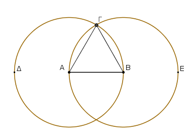
῎Εστω ἡ δοθεῖσα εὐθεῖα πεπερασμένη ἡ ΑΒ. Δεῖ δὴ ἐπὶ τῆς ΑΒ εὐθείας
τρίγωνον ἰσόπλευρον συστήσασθαι.
Κέντρῳ μὲν τῷ Α διαστήματι δὲ τῷ ΑΒ κύκλος γεγράφθω ὁ ΒΓΔ, καὶ πάλιν κέντρῳ μὲν τῷ Β διαστήματι δὲ τῷ ΒΑ
κύκλος γεγράφθω ὁ ΑΓΕ, καὶ ἀπὸ τοῦ Γ σημείου, καθ᾿ ὃ τέμνουσιν ἀλλήλους οἱ κύκλοι, ἐπί τὰ Α, Β σημεῖα ἐπεζεύχθωσαν εὐθεῖαι αἱ ΓΑ, ΓΒ.
Καὶ ἐπεὶ τὸ Α σημεῖον κέντρον ἐστὶ τοῦ ΓΔΒ κύκλου,
ἴση ἐστὶν ἡ ΑΓ τῇ ΑΒ· πάλιν, ἐπεὶ τὸ Β σημεῖον κέντρον ἐστὶ τοῦ ΓΑΕ κύκλου,
ἴση ἐστὶν ἡ ΒΓ τῇ ΒΑ. ἐδείχθη δὲ καὶ ἡ ΓΑ τῇ ΑΒ ἴση· ἑκατέρα ἄρα τῶν ΓΑ, ΓΒ τῇ ΑΒ ἐστιν ἴση.
τὰ δὲ τῷ αὐτῷ ἴσα καὶ ἀλλήλοις ἐστὶν ἴσα· καὶ ἡ ΓΑ ἄρα τῇ ΓΒ ἐστιν ἴση· αἱ τρεῖς ἄρα αἱ ΓΑ, ΑΒ, ΒΓ
ἴσαι ἀλλήλαις εἰσίν. ᾿Ισόπλευρον ἄρα ἐστὶ τὸ ΑΒΓ τρίγωνον. καὶ συνέσταται ἐπὶ τῆς δοθείσης εὐθείας πεπερασμένης τῆς ΑΒ. ὅπερ ἔδει ποιῆσαι.
Πρὸς τῷ δοθέντι σημείῳ τῇ δοθείσῃ εὐθείᾳ ἴσην εὐθεῖαν θέσθαι.
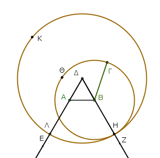
῎Εστω τὸ μὲν δοθὲν σημεῖον τὸ Α, ἡ δὲ δοθεῖσα εὐθεῖα ἡ ΒΓ· δεῖ δὴ πρὸς τῷ
Α σημείῳ τῇ δοθείσῃ εὐθείᾳ τῇ ΒΓ ἴσην εὐθεῖαν θέσθαι.
᾿Επεζεύχθω γὰρ ἀπὸ τοῦ Α σημείου ἐπί τὸ Β σημεῖον εὐθεῖα ἡ ΑΒ, καὶ συνεστάτω ἐπ᾿ αὐτῆς τρίγωνον ἰσόπλευρον τὸ ΔΑΒ,
καὶ ἐκβεβλήσθωσαν ἐπ᾿ εὐθείας ταῖς ΔΑ, ΔΒ εὐθεῖαι αἱ ΑΕ, ΒΖ, καὶ κέντρῳ μὲν τῷ Β διαστήματι δὲ τῷ ΒΓ κύκλος γεγράφθω ὁ ΓΗΘ,
καὶ πάλιν κέντρῳ τῷ Δ καὶ διαστήματι τῷ ΔΗ κύκλος γεγράφθω ὁ ΗΚΛ.
᾿Επεὶ οὖν τὸ Β σημεῖον κέντρον ἐστὶ τοῦ ΓΗΘ,
ἴση ἐστὶν ἡ ΒΓ τῇ ΒΗ. πάλιν, ἐπεὶ τὸ Δ σημεῖον κέντρον ἐστὶ τοῦ ΗΚΛ κύκλου, ἴση ἐστὶν ἡ ΔΛ τῇ ΔΗ,
ὧν ἡ ΔΑ τῇ ΔΒ ἴση ἐστίν. λοιπὴ ἄρα ἡ ΑΛ λοιπῇ τῇ ΒΗ ἐστιν ἴση. ἐδείχθη δὲ καὶ ἡ ΒΓ τῇ ΒΗ ἴση· ἑκατέρα ἄρα τῶν ΑΛ, ΒΓ τῇ ΒΗ ἐστιν ἴση.
τὰ δὲ τῷ αὐτῷ ἴσα καὶ ἀλλήλοις ἐστὶν ἴσα· καὶ ἡ ΑΛ ἄρα τῇ ΒΓ ἐστιν ἴση.
Πρὸς ἄρα τῷ δοθέντι σημείῳ τῷ Α
τῇ δοθείσῃ εὐθείᾳ τῇ ΒΓ ἴση εὐθεῖα κεῖται ἡ ΑΛ· ὅπερ ἔδει ποιῆσαι.
Δύο δοθεισῶν εὐθειῶν ἀνίσων ἀπὸ τῆς μείζονος τῇ ἐλάσσονι ἴσην εὐθεῖαν ἀφελεῖν.
῎Εστωσαν αἱ δοθεῖσαι δύο εὐθεῖαι ἄνισοι αἱ ΑΒ, Γ, ὧν μείζων ἔστω ἡ ΑΒ· δεῖ δὴ ἀπὸ τῆς μείζονος τῆς ΑΒ τῇ ἐλάσσονι τῇ Γ ἴσην εὐθεῖαν ἀφελεῖν.
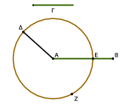
Κείσθω πρὸς τῷ Α σημείῳ τῇ Γ εὐθείᾳ ἴση ἡ ΑΔ· καὶ κέντρῳ μὲν τῷ Α διαστήματι δὲ τῷ ΑΔ κύκλος γεγράφθω ὁ ΔΕΖ.
Καὶ ἐπεὶ τὸ Α σημεῖον κέντρον ἐστὶ τοῦ ΔΕΖ κύκλου, ἴση ἐστὶν ἡ ΑΕ τῇ ΑΔ· ἀλλὰ καὶ ἡ Γ τῇ ΑΔ ἐστιν ἴση. ἑκατέρα ἄρα τῶν ΑΕ, Γ τῇ ΑΔ ἐστιν ἴση· ὥστε καὶ ἡ ΑΕ τῇ Γ ἐστιν ἴση.
Δύο ἄρα δοθεισῶν εὐθειῶν ἀνίσων τῶν ΑΒ, Γ ἀπὸ τῆς μείζονος τῆς ΑΒ τῇ ἐλάσσονι τῇ Γ ἴση ἀφῄρηται ἡ ΑΕ· ὅπερ ἔδει ποιῆσαι.
᾿Εὰν δύο τρίγωνα τὰς δύο πλευρὰς [ταῖς] δυσὶ πλευραῖς ἴσας ἔχῃ ἑκατέραν ἑκατέρᾳ καὶ τὴν γωνίαν τῇ γωνίᾳ ἴσην ἔχῃ τὴν ὑπὸ τῶν ἴσων εὐθειῶν περιεχομένην, καὶ τὴν βάσιν τῂ βάσει ἴσην ἕξει, καὶ τὸ τρίγωνον τῷ τριγώνῳ ἴσον ἔσται, καὶ αἱ λοιπαὶ γωνίαι ταῖς λοιπαῖς γωνίαις ἴσαι ἔσονται ἑκατέρα ἑκατέρᾳ, ὑφ᾿ ἃς αἱ ἴσαι πλευραὶ ὑποτείνουσιν.
῎Εστω δύο τρίγωνα τὰ ΑΒΓ, ΔΕΖ τὰς δύο πλευρὰς τὰς ΑΒ, ΑΓ ταῖς δυσὶ πλευραῖς ταῖς ΔΕ, ΔΖ ἴσας ἔχοντα ἑκατέραν ἑκατέρᾳ τὴν μὲν ΑΒ τῇ ΔΕ τὴν δὲ ΑΓ τῇ ΔΖ καὶ γωνίαν τὴν ὑπὸ ΒΑΓ γωνίᾳ τῇ ὑπὸ ΕΔΖ ἴσην.
λέγω, ὅτι καὶ βάσις ἡ ΒΓ βάσει τῇ ΕΖ ἴση ἐστίν, καὶ τὸ ΑΒΓ τρίγωνον τῷ ΔΕΖ τριγώνῳ ἴσον ἔσται, καὶ αἱ λοιπαὶ γωνίαι ταῖς λοιπαῖς γωνίαις ἴσαι ἔσονται ἑκατέρα ἑκατέρᾳ, ὑφ᾿ ἃς αἱ ἴσαι πλευραὶ ὑποτείνουσιν, ἡ μὲν ὑπὸ ΑΒΓ τῇ ὑπὸ ΔΕΖ, ἡ δὲ ὑπὸ ΑΓΒ τῇ ὑπὸ ΔΖΕ.
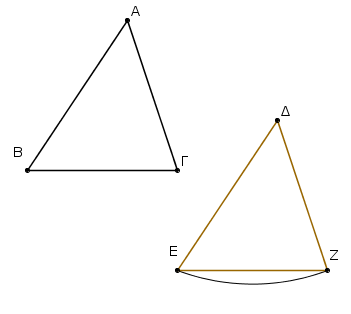
᾿Εφαρμοζομένου γὰρ τοῦ ΑΒΓ τριγώνου ἐπὶ τὸ ΔΕΖ τρίγωνον καὶ τιθεμένου τοῦ μὲν Α σημείου ἐπὶ τὸ Δ σημεῖον τῆς δὲ ΑΒ εὐθείας ἐπὶ τὴν ΔΕ, ἐφαρμόσει καὶ τὸ Β σημεῖον ἐπὶ τὸ Ε διὰ τὸ ἴσην εἶναι τὴν ΑΒ τῇ ΔΕ· ἐφαρμοσάσης δὴ τῆς ΑΒ ἐπὶ τὴν ΔΕ ἐφαρμόσει καὶ ἡ ΑΓ εὐθεῖα ἐπὶ τὴν ΔΖ διὰ τὸ ἴσην εἶναι τὴν ὑπὸ ΒΑΓ γωνίαν τῇ ὑπὸ ΕΔΖ· ὥστε καὶ τὸ Γ σημεῖον ἐπὶ τὸ Ζ σημεῖον ἐφαρμόσει διὰ τὸ ἴσην πάλιν εἶναι τὴν ΑΓ τῇ ΔΖ.
ἀλλὰ μὴν καὶ τὸ Β ἐπὶ τὸ Ε ἐφηρμόκει· ὥστε βάσις ἡ ΒΓ ἐπὶ βάσιν τὴν ΕΖ ἐφαρμόσει. εἰ γὰρ τοῦ μὲν Β ἐπὶ τὸ Ε ἐφαρμόσαντος τοῦ δὲ Γ ἐπὶ τὸ Ζ ἡ ΒΓ βάσις ἐπὶ τὴν ΕΖ οὐκ ἐφαρμόσει, δύο εὐθεῖαι χωρίον περιέξουσιν· ὅπερ ἐστὶν ἀδύνατον.
ἐφαρμόσει ἄρα ἡ ΒΓ βάσις ἐπὶ τὴν ΕΖ καὶ ἴση αὐτῇ ἔσται· ὥστε καὶ ὅλον τὸ ΑΒΓ τρίγωνον ἐπὶ ὅλον τὸ ΔΕΖ τρίγωνον ἐφαρμόσει καὶ ἴσον αὐτῷ ἔσται, καὶ αἱ λοιπαὶ γωνίαι ἐπὶ τὰς λοιπὰς γωνίας ἐφαρμόσουσι καὶ ἴσαι αὐταῖς ἔσονται, ἡ μὲν ὑπὸ ΑΒΓ τῇ ὑπὸ ΔΕΖ ἡ δὲ ὑπὸ ΑΓΒ τῇ ὑπὸ ΔΖΕ.
᾿Εὰν ἄρα δύο τρίγωνα τὰς δύο πλευρὰς [ταῖς] δύο πλευραῖς ἴσας ἔχῃ ἑκατέραν ἑκατέρᾳ καὶ τὴν γωνίαν τῇ γωνίᾳ ἴσην ἔχῃ τὴν ὑπὸ τῶν ἴσων εὐθειῶν περιεχομένην, καὶ τὴν βάσιν τῂ βάσει ἴσην ἕξει, καὶ τὸ τρίγωνον τῷ τριγώνῳ ἴσον ἔσται, καὶ αἱ λοιπαὶ γωνίαι ταῖς λοιπαῖς γωνίαις ἴσαι ἔσονται ἑκατέρα ἑκατέρᾳ, ὑφ᾿ ἃς αἱ ἴσαι πλευραὶ ὑποτείνουσιν· ὅπερ ἔδει δεῖξαι.
Τῶν ἰσοσκελῶν τριγώνων αἱ τρὸς τῇ βάσει γωνίαι ἴσαι ἀλλήλαις εἰσίν, καὶ προσεκβληθεισῶν τῶν ἴσων εὐθειῶν αἱ ὑπὸ τὴν βάσιν γωνίαι ἴσαι ἀλλήλαις ἔσονται.
῎Εστω τρίγωνον ἰσοσκελὲς τὸ ΑΒΓ ἴσην ἔχον τὴν ΑΒ πλευρὰν τῇ ΑΓ πλευρᾷ, καὶ προσεκβεβλήσθωσαν ἐπ᾿ εὐθείας ταῖς ΑΒ, ΑΓ εὐθεῖαι αἱ ΒΔ, ΓΕ· λέγω, ὅτι ἡ μὲν ὑπὸ ΑΒΓ γωνία τῇ ὑπὸ ΑΓΒ ἴση ἐστίν, ἡ δὲ ὑπὸ ΓΒΔ τῇ ὑπὸ ΒΓΕ.
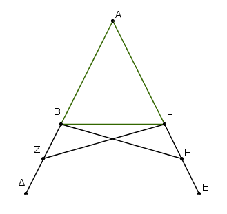
Εἰλήφθω γὰρ ἐπὶ τῆς ΒΔ τυχὸν σημεῖον τὸ Ζ, καὶ ἀφῃρήσθω ἀπὸ τῆς μείζονος τῆς ΑΕ τῇ ἐλάσσονι τῇ ΑΖ ἴση ἡ ΑΗ, καὶ ἐπεζεύχθωσαν αἱ ΖΓ, ΗΒ εὐθεῖαι.
᾿Επεὶ οὖν ἴση ἐστὶν ἡ μὲν ΑΖ τῇ ΑΗ ἡ δὲ ΑΒ τῇ ΑΓ, δύο δὴ αἱ ΖΑ, ΑΓ δυσὶ ταῖς ΗΑ, ΑΒ ἴσαι εἰσὶν ἑκατέρα ἑκατέρᾳ· καὶ γωνίαν κοινὴν περιέχουσι τὴν ὑπὸ ΖΑΗ· βάσις ἄρα ἡ ΖΓ βάσει τῇ ΗΒ ἴση ἐστίν, καὶ τὸ ΑΖΓ τρίγωνον τῷ ΑΗΒ τριγώνῳ ἴσον ἔσται, καὶ αἱ λοιπαὶ γωνίαι ταῖς λοιπαῖς γωνίαις ἴσαι ἔσονται ἑκατέρα ἑκατέρᾳ, ὑφ᾿ ἃς αἱ ἴσαι πλευραὶ ὑποτείνουσιν, ἡ μὲν ὑπὸ ΑΓΖ τῇ ὑπὸ ΑΒΗ, ἡ δὲ ὑπὸ ΑΖΓ τῇ ὑπὸ ΑΗΒ. καὶ ἐπεὶ ὅλη ἡ ΑΖ ὅλῃ τῇ ΑΗ ἐστιν ἴση, ὧν ἡ ΑΒ τῇ ΑΓ ἐστιν ἴση, λοιπὴ ἄρα ἡ ΒΖ λοιπῇ τῇ ΓΗ ἐστιν ἴση.
ἐδείχθη δὲ καὶ ἡ ΖΓ τῇ ΗΒ ἴση· δύο δὴ αἱ ΒΖ, ΖΓ δυσὶ ταῖς ΓΗ, ΗΒ ἴσαι εἰσὶν ἑκατέρα ἑκατέρᾳ· καὶ γωνία ἡ ὑπὸ ΒΖΓ γωνίᾳ τῃ ὑπὸ ΓΗΒ ἴση, καὶ βάσις αὐτῶν κοινὴ ἡ ΒΓ· καὶ τὸ ΒΖΓ ἄρα τρίγωνον τῷ ΓΗΒ τριγώνῳ ἴσον ἔσται, καὶ αἱ λοιπαὶ γωνίαι ταῖς λοιπαῖς γωνίαις ἴσαι ἔσονται ἑκατέρα ἑκατέρᾳ, ὑφ᾿ ἃς αἱ ἴσαι πλευραὶ ὑποτείνουσιν·
ἴση ἄρα ἐστὶν ἡ μὲν ὑπὸ ΖΒΓ τῇ ὑπὸ ΗΓΒ ἡ δὲ ὑπὸ ΒΓΖ τῇ ὑπὸ ΓΒΗ. ἐπεὶ οὖν ὅλη ἡ ὑπὸ ΑΒΗ γωνία ὅλῃ τῇ ὑπὸ ΑΓΖ γωνίᾳ ἐδείχθη ἴση, ὧν ἡ ὑπὸ ΓΒΗ τῇ ὑπὸ ΒΓΖ ἴση, λοιπὴ ἄρα ἡ ὑπὸ ΑΒΓ λοιπῇ τῇ ὑπὸ ΑΓΒ ἐστιν ἴση· καί εἰσι πρὸς τῇ βάσει τοῦ ΑΒΓ τριγώνου.
ἐδείχθη δὲ καὶ ἡ ὑπὸ ΖΒΓ τῇ ὑπὸ ΗΓΒ ἴση· καί εἰσιν ὑπὸ τὴν βάσιν. Τῶν ἄρα ἰσοσκελῶν τριγώνων αἱ τρὸς τῇ βάσει γωνίαι ἴσαι ἀλλήλαις εἰσίν, καὶ προσεκβληθεισῶν τῶν ἴσων εὐθειῶν αἱ ὑπὸ τὴν βάσιν γωνίαι ἴσαι ἀλλήλαις ἔσονται· ὅπερ ἔδει δεῖξαι.
᾿Εὰν τριγώνου αἱ δύο γωνίαι ἴσαι ἀλλήλαις ὦσιν, καὶ αἱ ὑπὸ τὰς ἴσας γωνίας ὑποτείνουσαι πλευραὶ ἴσαι ἀλλήλαις ἔσονται.
῎Εστω τρίγωνον τὸ ΑΒΓ ἴσην ἔχον τὴν ὑπὸ ΑΒΓ γωνίαν τῇ ὑπὸ ΑΓΒ γωνίᾳ· λέγω, ὅτι καὶ πλευρὰ ἡ ΑΒ πλευρᾷ τῇ ΑΓ ἐστιν ἴση.
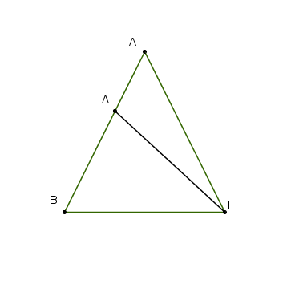
Εἰ γὰρ ἄνισός ἐστιν ἡ ΑΒ τῇ ΑΓ, ἡ ἑτέρα αὐτῶν μείζων ἐστίν. ἔστω μείζων ἡ ΑΒ, καὶ ἀφῃρήσθω ἀπὸ τῆς μείζονος τῆς ΑΒ τῇ ἐλάττονι τῇ ΑΓ ἴση ἡ ΔΒ, καὶ ἐπεζεύχθω ἡ ΔΓ.
᾿Επεὶ οὖν ἴση ἐστὶν ἡ ΔΒ τῇ ΑΓ κοινὴ δὲ ἡ ΒΓ, δύο δὴ αἱ ΔΒ, ΒΓ δύο ταῖς ΑΓ, ΓΒ ἴσαι εἰσὶν ἑκατέρα ἑκατέρᾳ, καὶ γωνία ἡ ὑπὸ ΔΒΓ γωνίᾳ τῇ ὑπὸ ΑΓΒ ἐστιν ἴση· βάσις ἄρα ἡ ΔΓ βάσει τῇ ΑΒ ἴση ἐστίν, καὶ τὸ ΔΒΓ τρίγωνον τῷ ΑΓΒ τριγώνῳ ἴσον ἔσται, τὸ ἔλασσον τῷ μείζονι· ὅπερ ἄτοπον· οὐκ ἄρα ἄνισός ἐστιν ἡ ΑΒ τῇ ΑΓ· ἴση ἄρα. ᾿Εὰν ἄρα τριγώνου αἱ δὑο γωνίαι ἴσαι ἀλλήλαις ὦσιν, καὶ αἱ ὑπὸ τὰς ἴσας γωνίας ὑποτείνουσαι πλευραὶ ἴσαι ἀλλήλαις ἔσονται· ὅπερ ἔδει δεῖξαι.
᾿Επὶ τῆς αὐτῆς εὐθείας δύο ταῖς αὐταῖς εὐθείαις ἄλλαι δύο εὐθεῖαι ἴσαι ἑκατέρα ἑκατέρᾳ οὐ συσταθήσονται πρὸς ἄλλῳ καὶ ἄλλῳ σημείῳ ἐπὶ τὰ αὐτὰ μέρη τὰ αὐτὰ πέρατα ἔχουσαι ταῖς ἐξ ἀρχῆς εὐθείαις.
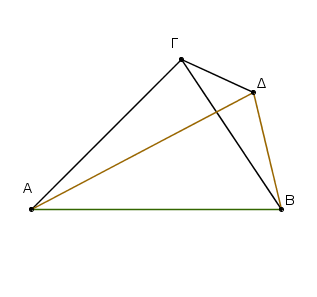
Εἰ γὰρ δυνατόν, ἐπὶ τῆς αὐτῆς εὐθείας τῆς ΑΒ δύο ταῖς αὐταῖς εὐθείαις ταῖς ΑΓ, ΓΒ ἄλλαι δύο εὐθεῖαι αἱ ΑΔ, ΔΒ ἴσαι ἑκατέρα ἑκατέρᾳ συνεστάτωσαν πρὸς ἄλλῳ καὶ ἄλλῳ σημείῳ τῷ τε Γ καὶ Δ ἐπὶ τὰ αὐτὰ μέρη τὰ αὐτὰ πέρατα ἔχουσαι, ὥστε ἴσην εἶναι τὴν μὲν ΓΑ τῇ ΔΑ τὸ αὐτὸ πέρας ἔχουσαν αὐτῇ τὸ Α, τὴν δὲ ΓΒ τῇ ΔΒ τὸ αὐτὸ πέρας ἔχουσαν αὐτῇ τὸ Β, καὶ ἐπεζεύχθω ἡ ΓΔ.
᾿Επεὶ οὖν ἴση ἐστὶν ἡ ΑΓ τῇ ΑΔ, ἴση ἐστὶ καὶ γωνία ἡ ὑπὸ ΑΓΔ τῇ ὑπὸ ΑΔΓ· μείζων ἄρα ἡ ὑπὸ ΑΔΓ τῆς ὑπὸ ΔΓΒ· πολλῷ ἄρα ἡ ὑπὸ ΓΔΒ μείζων ἐστί τῆς ὑπὸ ΔΓΒ. πάλιν ἐπεὶ ἴση ἐστὶν ἡ ΓΒ τῇ ΔΒ, ἴση ἐστὶ καὶ γωνία ἡ ὑπὸ ΓΔΒ γωνίᾳ τῇ ὑπὸ ΔΓΒ. ἐδείχθη δὲ αὐτῆς καὶ πολλῷ μείζων· ὅπερ ἐστὶν ἀδύνατον.
Οὐκ ἄρα ἐπὶ τῆς αὐτῆς εὐθείας δύο ταῖς αὐταῖς εὐθείαις ἄλλαι δύο εὐθεῖαι ἴσαι ἑκατέρα ἑκατέρᾳ συσταθήσονται πρὸς ἄλλῳ καὶ ἄλλῳ σημείῳ ἐπὶ τὰ αὐτὰ μέρη τὰ αὐτὰ πέρατα ἔχουσαι ταῖς ἐξ ἀρχῆς εὐθείαις· ὅπερ ἔδει δεῖξαι.
᾿Εὰν δύο τρίγωνα τὰς δύο πλευρὰς [ταῖς] δύο πλευραῖς ἴσας ἔχῃ ἑκατέραν ἑκατέρᾳ, ἔχῃ δὲ καὶ τὴν βάσιν τῇ βάσει ἴσην, καὶ τὴν γωνίαν τῇ γωνίᾳ ἴσην ἕξει τὴν ὑπὸ τῶν ἴσων εὐθειῶν περιεχομένην.
῎Εστω δύο τρίγωνα τὰ ΑΒΓ, ΔΕΖ τὰς δύο πλευρὰς τὰς ΑΒ, ΑΓ ταῖς δύο πλευραῖς ταῖς ΔΕ, ΔΖ ἴσας ἔχοντα ἑκατέραν ἑκατέρᾳ, τὴν μὲν ΑΒ τῇ ΔΕ τὴν δὲ ΑΓ τῇ ΔΖ· ἐχέτω δὲ καὶ βάσιν τὴν ΒΓ βάσει τῇ ΕΖ ἴσην· λέγω, ὅτι καὶ γωνία ἡ ὑπὸ ΒΑΓ γωνίᾳ τῇ ὑπὸ ΕΔΖ ἐστιν ἴση.
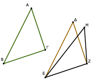
᾿Εφαρμοζομένου γὰρ τοῦ ΑΒΓ τριγώνου ἐπὶ τὸ ΔΕΖ τρίγωνον καὶ τιθεμένου τοῦ μὲν Β σημείου ἐπὶ τὸ Ε σημεῖον τῆς δὲ ΒΓ εὐθείας ἐπὶ τὴν ΕΖ ἐφαρμόσει καὶ τὸ Γ σημεῖον ἐπὶ τὸ Ζ διὰ τὸ ἴσην εἶναι τὴν ΒΓ τῇ ΕΖ·
ἐφαρμοσάσης δὴ τῆς ΒΓ ἐπὶ τὴν ΕΖ ἐφαρμόσουσι καὶ αἱ ΒΑ, ΓΑ ἐπὶ τὰς ΕΔ, ΔΖ. εἰ γὰρ βάσις μὲν ἡ ΒΓ ἐπὶ βάσιν τὴν ΕΖ ἐφαρμόσει, αἱ δὲ ΒΑ, ΑΓ πλευραὶ ἐπὶ τὰς ΕΔ, ΔΖ οὐκ ἐφαρμόσουσιν ἀλλὰ παραλλάξουσιν ὡς αἱ ΕΗ, ΗΖ, συσταθήσονται ἐπὶ τῆς αὐτῆς εὐθείας δύο ταῖς αὐταῖς εὐθείαις ἄλλαι δύο εὐθεῖαι ἴσαι ἑκατέρα ἑκατέρᾳ πρὸς ἄλλῳ καὶ ἄλλῳ σημείῳ ἐπὶ τὰ αὐτὰ μέρη τὰ αὐτὰ πέρατα ἔχουσαι.
οὐ συνίστανται δέ· οὐκ ἄρα ἐφαρμοζομένης τῆς ΒΓ βάσεως ἐπὶ τὴν ΕΖ βάσιν οὐκ ἐφαρμόσουσι καὶ αἱ ΒΑ, ΑΓ πλευραὶ ἐπὶ τὰς ΕΔ, ΔΖ. ἐφαρμόσουσιν ἄρα· ὥστε καὶ γωνία ἡ ὑπὸ ΒΑΓ ἐπὶ γωνίαν τὴν ὑπὸ ΕΔΖ ἐφαρμόσει καὶ ἴση αὐτῇ ἔσται.
᾿Εὰν ἄρα δύο τρίγωνα τὰς δύο πλευρὰς [ταῖς] δύο πλευραῖς ἴσας ἔχῃ ἑκατέραν ἑκατέρᾳ καὶ τὴν βάσιν τῇ βάσει ἴσην ἔχῃ, καὶ τὴν γωνίαν τῇ γωνίᾳ ἴσην ἕξει τὴν ὑπὸ τῶν ἴσων εὐθειῶν περιεχομένην· ὅπερ ἔδει δεῖξαι.
Τὴν δοθεῖσαν γωνίαν εὐθύγραμμον δίχα τεμεῖν.
῎Εστω ἡ δοθεῖσα γωνία εὐθύγραμμος ἡ ὑπὸ ΒΑΓ. δεῖ δὴ αὐτὴν δίχα τεμεῖν.
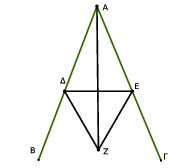
Εἰλήφθω ἐπὶ τῆς ΑΒ τυχὸν σημεῖον τὸ Δ, καὶ ἀφῃρήσθω ἀπὸ τῆς ΑΓ τῇ ΑΔ ἴση ἡ ΑΕ, καὶ ἐπεζεύχθω ἡ ΔΕ, καὶ συνεστάτω ἐπὶ τῆς ΔΕ τρίγωνον ἰσόπλευρον τὸ ΔΕΖ, καὶ ἐπεζεύχθω ἡ ΑΖ· λέγω, ὅτι ἡ ὑπὸ ΒΑΓ γωνία δίχα τέτμηται ὑπὸ τῆς ΑΖ εὐθείας.
᾿Επεὶ γὰρ ἴση ἐστὶν ἡ ΑΔ τῇ ΑΕ, κοινὴ δὲ ἡ ΑΖ, δύο δὴ αἱ ΔΑ, ΑΖ δυσὶ ταῖς ΕΑ, ΑΖ ἴσαι εἰσὶν ἑκατέρα ἑκατέρᾳ. καὶ βάσις ἡ ΔΖ βάσει τῇ ΕΖ ἴση ἐστίν· γωνία ἄρα ἡ ὑπὸ ΔΑΖ γωνίᾳ τῇ ὑπὸ ΕΑΖ ἴση ἐστίν.
῾Η ἄρα δοθεῖσα γωνία εὐθύγραμμος ἡ ὑπὸ ΒΑΓ δίχα τέτμηται ὑπὸ τῆς ΑΖ εὐθείας· ὅπερ ἔδει ποιῆσαι.
Τὴν δοθεῖσαν εὐθεῖαν πεπερασμένην δίχα τεμεῖν.
῎Εστω ἡ δοθεῖσα εὐθεῖα πεπερασμένη ἡ ΑΒ· δεῖ δὴ τὴν ΑΒ εὐθεῖαν πεπερασμένην δίχα τεμεῖν.
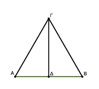
Συνεστάτω ἐπ᾿ αὐτῆς τρίγωνον ἰσόπλευρον τὸ ΑΒΓ, καὶ τετμήσθω ἡ ὑπὸ ΑΓΒ γωνία δίχα τῇ ΓΔ εὐθείᾳ· λέγω, ὅτι ἡ ΑΒ εὐθεῖα δίχα τέτμηται κατὰ τὸ Δ σημεῖον. ᾿Επεὶ γὰρ ἴση ἐστὶν ἡ ΑΓ τῇ ΓΒ, κοινὴ δὲ ἡ ΓΔ, δύο δὴ αἱ ΑΓ, ΓΔ δύο ταῖς ΒΓ, ΓΔ ἴσαι εἰσὶν ἑκατέρα ἑκατέρᾳ· καὶ γωνία ἡ ὑπὸ ΑΓΔ γωνίᾳ τῇ ὑπὸ ΒΓΔ ἴση ἐστίν· βάσις ἄρα ἡ ΑΔ βάσει τῇ ΒΔ ἴση ἐστίν.
῾Η ἄρα δοθεῖσα εὐθεῖα πεπερασμένη ἡ ΑΒ δίχα τέτμηται κατὰ τὸ Δ· ὅπερ ἔδει ποιῆσαι.
Τῇ δοθείσῃ εὐθείᾳ ἀπὸ τοῦ πρὸς αὐτῇ δοθέντος σημείου πρὸς ὀρθὰς γωνίας εὐθεῖαν γραμμὴν ἀγαγεῖν.
῎Εστω ἡ μὲν δοθεῖσα εὐθεῖα ἡ ΑΒ τὸ δὲ δοθὲν σημεῖον ἐπ᾿ αὐτῆς τὸ Γ· δεῖ δὴ ἀπὸ τοῦ Γ σημείου τῇ ΑΒ εὐθείᾳ πρὸς ὀρθὰς γωνίας εὐθεῖαν γραμμὴν ἀγαγεῖν.
Εἰλήφθω ἐπὶ τῆς ΑΓ τυχὸν σημεῖον τὸ Δ, καὶ κείσθω τῇ ΓΔ ἴση ἡ ΓΕ, καὶ συνεστάτω ἐπὶ τῆς ΔΕ τρίγωνον ἰσόπλευρον τὸ ΖΔΕ, καὶ ἐπεζεύχθω ἡ ΖΓ· λέγω, ὅτι τῇ δοθείσῃ εὐθείᾳ τῇ ΑΒ ἀπὸ τοῦ πρὸς αὐτῇ δοθέντος σημείου τοῦ Γ πρὸς ὀρθὰς γωνίας εὐθεῖα γραμμὴ ἦκται ἡ ΖΓ.
᾿Επεὶ γὰρ ἴση ἐστὶν ἡ ΔΓ τῇ ΓΕ, κοινὴ δὲ ἡ ΓΖ, δύο δὴ αἱ ΔΓ, ΓΖ δυσὶ ταῖς ΕΓ, ΓΖ ἴσαι εἰσὶν ἑκατέρα ἑκατέρᾳ· καὶ βάσις ἡ ΔΖ βάσει τῇ ΖΕ ἴση ἐστίν· γωνία ἄρα ἡ ὑπὸ ΔΓΖ γωνίᾳ τῇ ὑπὸ ΕΓΖ ἴση ἐστίν· καί εἰσιν ἐφεξῆς. ὅταν δὲ εὐθεῖα ἐπ᾿ εὐθεῖαν σταθεῖσα τὰς ἐφεξῆς γωνίας ἴσας ἀλλήλαις ποιῇ, ὀρθὴ ἑκατέρα τῶν ἴσων γωνιῶν ἐστιν· ὀρθὴ ἄρα ἐστὶν ἑκατέρα τῶν ὑπὸ ΔΓΖ, ΖΓΕ.
Τῇ ἄρα δοθείσῃ εὐθείᾳ τῇ ΑΒ ἀπὸ τοῦ πρὸς αὐτῇ δοθέντος σημείου τοῦ Γ πρὸς ὀρθὰς γωνίας εὐθεῖα γραμμὴ ἦκται ἡ ΓΖ· ὅπερ ἔδει ποιῆσαι.
᾿Επὶ τὴν δοθεῖσαν εὐθεῖαν ἄπειρον ἀπὸ τοῦ δοθέντος σημείου, ὃ μή ἐστιν ἐπ᾿ αὐτῆς, κάθετον εὐθεῖαν γραμμὴν ἀγαγεῖν.
῎Εστω ἡ μὲν δοθεῖσα εὐθεῖα ἄπειρος ἡ ΑΒ τὸ δὲ δοθὲν σημεῖον, ὃ μή ἐστιν ἐπ᾿ αὐτῆς, τὸ Γ· δεῖ δὴ ἐπὶ τὴν δοθεῖσαν εὐθεῖαν ἄπειρον τὴν ΑΒ ἀπὸ τοῦ δοθέντος σημείου τοῦ Γ, ὃ μή ἐστιν ἐπ᾿ αὐτῆς, κάθετον εὐθεῖαν γραμμὴν ἀγαγεῖν.
Εἰλήφθω γὰρ ἐπὶ τὰ ἕτερα μέρη τῆς ΑΒ εὐθείας τυχὸν σημεῖον τὸ Δ, καὶ κέντρῳ μὲν τῷ Γ διαστήματι δὲ τῷ ΓΔ κύκλος γεγράφθω ὁ ΕΖΗ, καὶ τετμήσθω ἡ ΕΗ εὐθεῖα δίχα κατὰ τὸ Θ, καὶ ἐπεζεύχθωσαν αἱ ΓΗ, ΓΘ, ΓΕ εὐθεῖαι· λέγω, ὅτι ἐπὶ τὴν δοθεῖσαν εὐθεῖαν ἄπειρον τὴν ΑΒ ἀπὸ τοῦ δοθέντος σημείου τοῦ Γ, ὃ μή ἐστιν ἐπ᾿ αὐτῆς, κάθετος ἦκται ἡ ΓΘ.
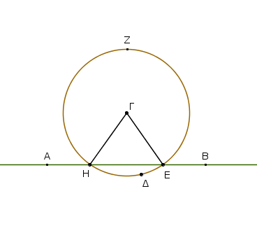
᾿Επεὶ γὰρ ἴση ἐστὶν ἡ ΗΘ τῇ ΘΕ, κοινὴ δὲ ἡ ΘΓ, δύο δὴ αἱ ΗΘ, ΘΓ δύο ταῖς ΕΘ, ΘΓ ἴσαι εἱσὶν ἑκατέρα ἑκατέρᾳ· καὶ βάσις ἡ ΓΗ βάσει τῇ ΓΕ ἐστιν ἴση· γωνία ἄρα ἡ ὑπὸ ΓΘΗ γωνίᾳ τῇ ὑπὸ ΕΘΓ ἐστιν ἴση. καί εἰσιν ἐφεξῆς.
ὅταν δὲ εὐθεῖα ἐπ᾿ εὐθεῖαν σταθεῖσα τὰς ἐφεξῆς γωνίας ἴσας ἀλλήλαις ποιῇ, ὀρθὴ ἑκατέρα τῶν ἴσων γωνιῶν ἐστιν, καὶ ἡ ἐφεστηκυῖα εὐθεῖα κάθετος καλεῖται ἐφ᾿ ἣν ἐφέστηκεν.
᾿Επὶ τὴν δοθεῖσαν ἄρα εὐθεῖαν ἄπειρον τὴν ΑΒ ἀπὸ τοῦ δοθέντος σημείου τοῦ Γ, ὃ μή ἐστιν ἐπ᾿ αὐτῆς, κάθετος ἦκται ἡ ΓΘ· ὅπερ ἔδει ποιῆσαι.
᾿Εὰν εὐθεῖα ἐπ᾿ εὐθεῖαν σταθεῖσα γωνίας ποιῇ, ἤτοι δύο ὀρθὰς ἢ δυσὶν ὀρθαῖς ἴσας ποιήσει.
Εὐθεῖα γάρ τις ἡ ΑΒ ἐπ᾿ εὐθεῖαν τὴν ΓΔ σταθεῖσα γωνίας ποιείτω τὰς ὑπὸ ΓΒΑ, ΑΒΔ· λὲγω, ὅτι αἱ ὑπὸ ΓΒΑ, ΑΒΔ γωνίαι ἤτοι δύο ὀρθαί εἰσιν ἢ δυσὶν ὀρθαῖς ἴσαι.
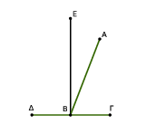
Εἰ μὲν οὖν ἴση ἐστὶν ἡ ὑπὸ ΓΒΑ τῇ ὑπὸ ΑΒΔ, δύο ὀρθαί εἰσιν. εἰ δὲ οὔ, ἤχθω ἀπὸ τοῦ Β σημείου τῇ ΓΔ [εὐθείᾳ] πρὸς ὀρθὰς ἡ ΒΕ· αἱ ἄρα ὑπὸ ΓΒΕ, ΕΒΔ δύο ὀρθαί εἰσιν· καὶ ἐπεὶ ἡ ὑπὸ ΓΒΕ δυσὶ ταῖς ὑπὸ ΓΒΑ, ΑΒΕ ἴση ἐστίν, κοινὴ προσκείσθω ἡ ὑπὸ ΕΒΔ· αἱ ἄρα ὑπὸ ΓΒΕ, ΕΒΔ τρισὶ ταῖς ὑπὸ ΓΒΑ, ΑΒΕ, ΕΒΔ ἴσαι εἰσίν.
πάλιν, ἐπεὶ ἡ ὑπὸ ΔΒΑ δυσὶ ταῖς ὑπὸ ΔΒΕ, ΕΒΑ ἴση ἐστίν, κοινὴ προσκείσθω ἡ ὑπὸ ΑΒΓ· αἱ ἄρα ὑπὸ ΔΒΑ, ΑΒΓ τρισὶ ταῖς ὑπὸ ΔΒΕ, ΕΒΑ, ΑΒΓ ἴσαι εἰσίν.
ἐδείχθησαν δὲ καὶ αἱ ὑπὸ ΓΒΕ, ΕΒΔ τρισὶ ταῖς αὐταῖς ἴσαι· τὰ δὲ τῷ αὐτῷ ἴσα καὶ ἀλλήλοις ἐστὶν ἴσα· καὶ αἱ ὑπὸ ΓΒΕ, ΕΒΔ ἄρα ταῖς ὑπὸ ΔΒΑ, ΑΒΓ ἴσαι εἰσίν· ἀλλὰ αἱ ὑπὸ ΓΒΕ, ΕΒΔ δύο ὀρθαί εἰσιν· καὶ αἱ ὑπὸ ΔΒΑ, ΑΒΓ ἄρα δυσὶν ὀρθαῖς ἴσαι εἰσίν.
᾿Εὰν ἄρα εὐθεῖα ἐπ᾿ εὐθεῖαν σταθεῖσα γωνίας ποιῇ, ἤτοι δύο ὀρθὰς ἢ δυσὶν ὀρθαῖς ἴσας ποιήσει· ὅπερ ἔδει δεῖξαι.
᾿Εὰν πρός τινι εὐθείᾳ καὶ τῷ πρὸς αὐτῇ σημείῳ δύο εὐθεῖαι μὴ ἐπὶ τὰ αὐτὰ μέρη κείμεναι τὰς ἐφεξῆς γωνίας δυσὶν ὀρθαῖς ἴσας ποιῶσιν, ἐπ᾿ εὐθείας ἔσονται ἀλλήλαις αἱ εὐθεῖαι.
Πρὸς γάρ τινι εὐθείᾳ τῇ ΑΒ καὶ τῷ πρὸς αὐτῇ σημείῳ τῷ Β δύο εὐθεῖαι αἱ ΒΓ, ΒΔ μὴ ἐπὶ τὰ αὐτὰ μέρη κείμεναι τὰς ἐφεξῆς γωνίας τὰς ὑπὸ ΑΒΓ, ΑΒΔ δύο ὀρθαῖς ἴσας ποιείτωσαν· λέγω, ὅτι ἐπ᾿ εὐθείας ἐστὶ τῇ ΓΒ ἡ ΒΔ.
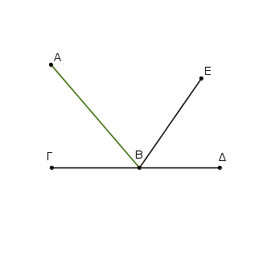
Εἰ γὰρ μή ἐστι τῇ ΒΓ ἐπ᾿ εὐθείας ἡ ΒΔ, ἔστω τῇ ΓΒ ἐπ᾿ εὐθείας ἡ ΒΕ.
᾿Επεὶ οὖν εὐθεῖα ἡ ΑΒ ἐπ᾿ εὐθεῖαν τὴν ΓΒΕ ἐφέστηκεν, αἱ ἄρα ὑπὸ ΑΒΓ, ΑΒΕ γωνίαι δύο ὀρθαῖς ἴσαι εἰσίν·
εἰσὶ δὲ καὶ αἱ ὑπὸ ΑΒΓ, ΑΒΔ δύο ὀρθαῖς ἴσαι· αἱ ἄρα ὑπὸ ΓΒΑ, ΑΒΕ ταῖς ὑπὸ ΓΒΑ, ΑΒΔ ἴσαι εἰσίν.
κοινὴ ἀφῃρήσθω ἡ ὑπὸ ΓΒΑ· λοιπὴ ἄρα ἡ ὑπὸ ΑΒΕ λοιπῇ τῇ ὑπὸ ΑΒΔ ἐστιν ἴση, ἡ ἐλάσσων τῇ μείζονι· ὅπερ ἐστὶν ἀδύνατον. οὐκ ἄρα ἐπ᾿ εὐθείας ἐστὶν ἡ ΒΕ τῇ ΓΒ. ὁμοίως δὴ δείξομεν, ὅτι οὐδὲ ἄλλη τις πλὴν τῆς ΒΔ· ἐπ᾿ εὐθείας ἄρα ἐστὶν ἡ ΓΒ τῇ ΒΔ.
᾿Εὰν ἄρα πρός τινι εὐθείᾳ καὶ τῷ πρὸς αὐτῇ σημείῳ δύο εὐθεῖαι μὴ ἐπὶ αὐτὰ μέρη κείμεναι τὰς ἐφεξῆς γωνίας δυσὶν ὀρθαῖς ἴσας ποιῶσιν, ἐπ᾿ εὐθείας ἔσονται ἀλλήλαις αἱ εὐθεῖαι· ὅπερ ἔδει δεῖξαι.
᾿Εὰν δύο εὐθεῖαι τέμνωσιν ἀλλήλας, τὰς κατὰ κορυφὴν γωνίας ἴσας ἀλλήλαις ποιοῦσιν.
Δύο γὰρ εὐθεῖαι αἱ ΑΒ, ΓΔ τεμνέτωσαν ἀλλήλας κατὰ τὸ Ε σημεῖον· λέγω, ὅτι ἴση ἐστὶν ἡ μὲν ὑπὸ ΑΕΓ γωνία τῇ ὑπὸ ΔΕΒ, ἡ δὲ ὑπὸ ΓΕΒ τῇ ὑπὸ ΑΕΔ.
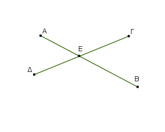
᾿Επεὶ γὰρ εὐθεῖα ἡ ΑΕ ἐπ᾿ εὐθεῖαν τὴν ΓΔ ἐφέστηκε γωνίας ποιοῦσα τὰς ὑπὸ ΓΕΑ, ΑΕΔ, αἱ ἄρα ὑπὸ ΓΕΑ, ΑΕΔ γωνίαι δυσὶν ὀρθαῖς ἴσαι εἰσίν.
πάλιν, ἐπεὶ εὐθεῖα ἡ ΔΕ ἐπ᾿ εὐθεῖαν τὴν ΑΒ ἐφέστηκε γωνίας ποιοῦσα τὰς ὑπὸ ΑΕΔ, ΔΕΒ, αἱ ἄρα ὑπὸ ΑΕΔ, ΔΕΒ γωνίαι δυσὶν ὀρθαῖς ἴσαι εἰσίν. ἐδείχθησαν δὲ καὶ αἱ ὑπὸ ΓΕΑ, ΑΕΔ δυσὶν ὀρθαῖς ἴσαι· αἱ ἄρα ὑπὸ ΓΕΑ, ΑΕΔ ταῖς ὑπὸ ΑΕΔ, ΔΕΒ ἴσαι εἰσίν. κοινὴ ἀφῃρήσθω ἡ ὑπὸ ΑΕΔ· λοιπὴ ἄρα ἡ ὑπὸ ΓΕΑ λοιπῇ τῇ ὑπὸ ΒΕΔ ἴση ἐστίν· ὁμοίως δὴ δειχθήσεται, ὅτι καὶ αἱ ὑπὸ ΓΕΒ, ΔΕΑ ἴσαι εἰσίν.
᾿Εὰν ἄρα δύο εὐθεῖαι τέμνωσιν ἀλλήλας, τὰς κατὰ κορυφὴν γωνίας ἴσας ἀλλήλαις ποιοῦσιν· ὅπερ ἔδει δεῖξαι.
Παντὸς τριγώνου μιᾶς τῶν πλευρῶν προσεκβληθείσης ἡ ἐκτὸς γωνία ἑκατέρας τῶν ἐντὸς καὶ ἀπεναντίον γωνιῶν μείζων ἐστίν.
῎Εστω τρίγωνον τὸ ΑΒΓ, καὶ προσεκβεβλήσθω αὐτοῦ μία πλευρὰ ἡ ΒΓ ἐπὶ τὸ Δ· λὲγω, ὅτι ἡ ἐκτὸς γωνία ἡ ὑπὸ ΑΓΔ μείζων ἐστὶν ἑκατέρας τῶν ἐντὸς καὶ ἀπεναντίον τῶν ὑπὸ ΓΒΑ, ΒΑΓ γωνιῶν.
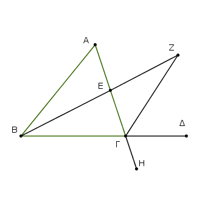
Τετμήσθω ἡ ΑΓ δίχα κατὰ τὸ Ε, καὶ ἐπιζευχθεῖσα ἡ ΒΕ ἐκβεβλήσθω ἐπ᾿ εὐθείας ἐπὶ τὸ Ζ, καὶ κείσθω τῇ ΒΕ ἴση ἡ ΕΖ, καὶ ἐπεζεύχθω ἡ ΖΓ, καὶ διήχθω ἡ ΑΓ ἐπὶ τὸ Η.
᾿Επεὶ οὖν ἴση ἐστὶν ἡ μὲν ΑΕ τῇ ΕΓ, ἡ δὲ ΒΕ τῇ ΕΖ, δύο δὴ αἱ ΑΕ, ΕΒ δυσὶ ταῖς ΓΕ, ΕΖ ἴσαι εἰσὶν ἑκατέρα ἑκατέρᾳ· καὶ γωνία ἡ ὑπὸ ΑΕΒ γωνίᾳ τῇ ὑπὸ ΖΕΓ ἴση ἐστίν· κατὰ κορυφὴν γάρ· βάσις ἄρα ἡ ΑΒ βάσει τῇ ΖΓ ἴση ἐστίν, καὶ τὸ ΑΒΕ τρίγωνον τῷ ΖΕΓ τριγώνῳ ἐστὶν ἴσον, καὶ αἱ λοιπαὶ γωνίαι ταῖς λοιπαῖς γωνίαις ἴσαι εἰσὶν ἑκατέρα ἑκατέρᾳ, ὑφ᾿ ἃς αἱ ἴσαι πλευραὶ ὑποτείνουσιν· ἴση ἄρα ἐστὶν ἡ ὑπὸ ΒΑΕ τῇ ὑπὸ ΕΓΖ. μείζων δέ ἐστιν ἡ ὑπὸ ΕΓΔ τῆς ὑπὸ ΕΓΖ· μείζων ἄρα ἡ ὑπὸ ΑΓΔ τῆς ὑπὸ ΒΑΕ.
῾Ομοίως δὴ τῆς ΒΓ τετμημένης δίχα δειχθήσεται καὶ ἡ ὑπὸ ΒΓΗ, τουτέστιν ἡ ὑπὸ ΑΓΔ, μείζων καὶ τῆς ὑπὸ ΑΒΓ.
Παντὸς ἄρα τριγώνου μιᾶς τῶν πλευρῶν προσεκβληθείσης ἡ ἐκτὸς γωνία ἑκατέρας τῶν ἐντὸς καὶ ἀπεναντίον γωνιῶν μείζων ἐστίν· ὅπερ ἔδει δεῖξαι.
Παντὸς τριγώνου αἱ δύο γωνίαι δύο ὀρθῶν ἐλάσσονές εἰσι πάντῇ μεταλαμβανόμεναι.
῎Εστω τρίγωνον τὸ ΑΒΓ· λέγω, ὅτι τοῦ ΑΒΓ τριγώνου αἱ δύο γωνίαι δύο ὀρθῶν ἐλάττονές εἰσι πάντῃ μεταλαμβανόμεναι.
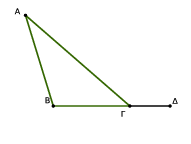
᾿Εκβεβλήσθω γὰρ ἡ ΒΓ ἐπὶ τὸ Δ. Καὶ ἐπεὶ τριγώνου τοῦ ΑΒΓ ἐκτός ἐστι γωνία ἡ ὑπὸ ΑΓΔ, μείζων ἐστὶ τῆς ἐντὸς καὶ ἀπεναντίον τῆς ὑπὸ ΑΒΓ. κοινὴ προσκείσθω ἡ ὑπὸ ΑΓΒ· αἱ ἄρα ὑπὸ ΑΓΔ, ΑΓΒ τῶν ὑπὸ ΑΒΓ, ΒΓΑ μείζονές εἰσιν.
ἀλλ᾿ αἱ ὑπὸ ΑΓΔ, ΑΓΒ δύο ὀρθαῖς ἴσαι εἰσίν· αἱ ἄρα ὑπὸ ΑΒΓ, ΒΓΑ δύο ὀρθῶν ἐλάσσονές εἰσιν. ὁμοίως δὴ δείξομεν, ὅτι καὶ αἱ ὑπὸ ΒΑΓ, ΑΓΒ δύο ὀρθῶν ἐλάσσονές εἰσι καὶ ἔτι αἱ ὑπὸ ΓΑΒ, ΑΒΓ.
Παντὸvς ἄρα τριγώνου αἱ δύο γωνίαι δύο ὀρθῶν ἐλάσσονές εἰσι πάντῇ μεταλαμβανόμεναι· ὅπερ ἔδει δεῖξαι.
Παντὸς τριγώνου ἡ μείζων πλευρὰ τὴν μείζονα γωνίαν ὑποτείνει.
῎Εστω γὰρ τρίγωνον τὸ ΑΒΓ μείζονα ἔχον τὴν ΑΓ πλευρὰν τῆς ΑΒ· λέγω, ὅτι καὶ γωνία ἡ ὑπὸ ΑΒΓ μείζων ἐστὶ τῆς ὑπὸ ΒΓΑ·
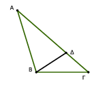
᾿Επεὶ γὰρ μείζων ἐστὶν ἡ ΑΓ τῆς ΑΒ, κείσθω τῇ ΑΒ ἴση ἡ ΑΔ, καὶ ἐπεζεύχθω ἡ ΒΔ. Καὶ ἐπεὶ τριγώνου τοῦ ΒΓΔ ἐκτός ἐστι γωνία ἡ ὑπὸ ΑΔΒ, μείζων ἐστὶ τῆς ἐντὸς καὶ ἀπεναντίον τῆς ὑπὸ ΔΓΒ·
ἴση δὲ ἡ ὑπὸ ΑΔΒ τῇ ὑπὸ ΑΒΔ, ἐπεὶ καὶ πλευρὰ ἡ ΑΒ τῇ ΑΔ ἐστιν ἴση· μείζων ἄρα καὶ ἡ ὑπὸ ΑΒΔ τῆς ὑπὸ ΑΓΒ· πολλῷ ἄρα ἡ ὑπὸ ΑΒΓ μείζων ἐστὶ τῆς ὑπὸ ΑΓΒ.
Παντὸς ἄρα τριγώνου ἡ μείζων πλευρὰ τὴν μείζονα γωνίαν ὑποτείνει· ὅπερ ἔδει δεῖξαι.
Παντὸς τριγώνου ὑπὸ τὴν μείζονα γωνίαν ἡ μείζων πλευρὰ ὑποτείνει.
῎Εστω τρίγωνον τὸ ΑΒΓ μείζονα ἔχον τὴν ὑπὸ ΑΒΓ γωνίαν τῆς ὑπὸ ΒΓΑ· λέγω, ὅτι καὶ πλευρὰ ἡ ΑΓ πλευρᾶς τῆς ΑΒ μείζων ἐστίν.
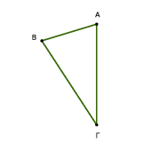
Εἰ γὰρ μή, ἤτοι ἴση ἐστὶν ἡ ΑΓ τῇ ΑΒ ἢ ἐλάσσων·
ἴση μὲν οὖν οὐκ ἔστιν ἡ ΑΓ τῇ ΑΒ· ἴση γὰρ ἂν ἦν καὶ γωνία ἡ ὑπὸ ΑΒΓ τῇ ὑπὸ ΑΓΒ· οὐκ ἔστι δέ· οὐκ ἄρα ἴση ἐστὶν ἡ ΑΓ τῇ ΑΒ.
οὐδὲ μὴν ἐλάσσων ἐστὶν ἡ ΑΓ τῆς ΑΒ· ἐλάσσων γὰρ ἂν ἦν καὶ γωνία ἡ ὑπὸ ΑΒΓ τῆς ὑπὸ ΑΓΒ· οὐκ ἔστι δέ· οὐκ ἄρα ἐλάσσων ἐστὶν ἡ ΑΓ τῆς ΑΒ. ἐδείχθη δέ, ὅτι οὐδὲ ἴση ἐστίν. μείζων ἄρα ἐστὶν ἡ ΑΓ τῆς ΑΒ.
Παντὸς ἄρα τριγώνου ὑπὸ τὴν μείζονα γωνίαν ἡ μείζων πλευρὰ ὑποτείνει· ὅπερ ἔδει δεῖξαι.
Παντὸς τριγώνου αἱ δύο πλευραὶ τῆς λοιπῆς μείζονές εἰσι πάντῃ μεταλαμβανόμεναι.
῎Εστω γὰρ τρίγωνον τὸ ΑΒΓ· λέγω, ὅτι τοῦ ΑΒΓ τριγώνου αἱ δύο πλευραὶ τῆς λοιπῆς μείζονές εἰσι πάντῃ μεταλαμβανόμεναι, αἱ μὲν ΒΑ, ΑΓ τῆς ΒΓ, αἱ δὲ ΑΒ, ΒΓ τῆς ΑΓ, αἱ δὲ ΒΓ, ΓΑ τῆς ΑΒ.
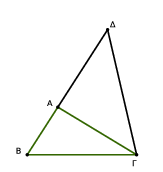
Διήχθω γὰρ ἡ ΒΑ ἐπὶ τὸ Δ σημεῖον, καὶ κείσθω τῇ ΓΑ ἴση ἡ ΑΔ, καὶ ἐπεζεύχθω ἡ ΔΓ. ᾿Επεὶ οὖν ἴση ἐστὶν ἡ ΔΑ τῇ ΑΓ, ἴση ἐστὶ καὶ γωνία ἡ ὑπὸ ΑΔΓ τῇ ὑπὸ ΑΓΔ· μείζων ἄρα ἡ ὑπὸ ΒΓΔ τῆς ὑπὸ ΑΔΓ·
καὶ ἐπεὶ τρίγωνόν ἐστι τὸ ΔΓΒ μείζονα ἔχον τὴν ὑπὸ ΒΓΔ γωνίαν τῆς ὑπὸ ΒΔΓ, ὑπὸ δὲ τὴν μείζονα γωνίαν ἡ μείζων πλευρὰ ὑποτείνει, ἡ ΔΒ ἄρα τῆς ΒΓ ἐστι μείζων.
ἴση δὲ ἡ ΔΑ τῇ ΑΓ· μείζονες ἄρα αἱ ΒΑ, ΑΓ τῆς ΒΓ· ὁμοίως δὴ δείξομεν, ὅτι καὶ αἱ μὲν ΑΒ, ΒΓ τῆς ΓΑ μείζονές εἰσιν, αἱ δὲ ΒΓ, ΓΑ τῆς ΑΒ.
Παντὸς ἄρα τριγώνου αἱ δύο πλευραὶ τῆς λοιπῆς μείζονές εἰσι πάντῃ μεταλαμβανόμεναι· ὅπερ ἔδει δεῖξαι.
᾿Εὰν τριγώνου ἐπὶ μιᾶς τῶν πλευρῶν ἀπὸ τῶν περάτων δύο εὐθεῖαι ἐντὸς συσταθῶσιν, αἱ συσταθεῖσαι τῶν λοιπῶν τοῦ τριγώνου δύο πλευρῶν ἐλάττονες μὲν ἔσονται, μείζονα δὲ γωνίαν περιέξουσιν.
Τριγώνου γὰρ τοῦ ΑΒΓ ἐπὶ μιᾶς τῶν πλευρῶν τῆς ΒΓ ἀπὸ τῶν περάτων τῶν Β, Γ δύο εὐθεῖαι ἐντὸς συνεστάτωσαν αἱ ΒΔ, ΔΓ· λέγω, ὅτι αἱ ΒΔ, ΔΓ τῶν λοιπῶν τοῦ τριγώνου δύο πλευρῶν τῶν ΒΑ, ΑΓ ἐλάσσονες μέν εἰσιν, μείζονα δὲ γωνίαν περιέχουσι τὴν ὑπὸ ΒΔΓ τῆς ὑπὸ ΒΑΓ.
Διήχθω γὰρ ἡ ΒΔ ἐπὶ τὸ Ε. καὶ ἐπεὶ παντὸς τριγώνου αἱ δύο πλευραὶ τῆς λοιπῆς μείζονές εἰσιν, τοῦ ΑΒΕ ἄρα τριγώνου αἱ δύο πλευραὶ αἱ ΑΒ, ΑΕ τῆς ΒΕ μείζονές εἰσιν· κοινὴ προσκείσθω ἡ ΕΓ· αἱ ἄρα ΒΑ, ΑΓ τῶν ΒΕ, ΕΓ μείζονές εἰσιν.
πάλιν, ἐπεὶ τοῦ ΓΕΔ τριγώνου αἱ δύο πλευραὶ αἱ ΓΕ, ΕΔ τῆς ΓΔ μείζονές εἰσιν, κοινὴ προσκείσθω ἡ ΔΒ· αἱ ΓΕ, ΕΒ ἄρα τῶν ΓΔ, ΔΒ μείζονές εἰσιν. ἀλλὰ τῶν ΒΕ, ΕΓ μείζονες ἐδείχθησαν αἱ ΒΑ, ΑΓ· πολλῷ ἄρα αἱ ΒΑ, ΑΓ τῶν ΒΔ, ΔΓ μείζονές εἰσιν.
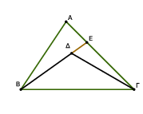
Πάλιν, ἐπεὶ παντὸς τριγώνου ἡ ἐκτὸς γωνία τῆς ἐντὸς καὶ ἀπεναντίον μείζων ἐστίν, τοῦ ΓΔΕ ἄρα τριγώνου ἡ ἐκτὸς γωνία ἡ ὑπὸ ΒΔΓ μείζων ἐστὶ τῆς ὑπὸ ΓΕΔ. διὰ ταὐτὰ τοίνυν καὶ τοῦ ΑΒΕ τριγώνου ἡ ἐκτὸς γωνία ἡ ὑπὸ ΓΕΒ μείζων ἐστὶ τῆς ὑπὸ ΒΑΓ. ἀλλὰ τῆς ὑπὸ ΓΕΒ μείζων ἐδείχθη ἡ ὑπὸ ΒΔΓ· πολλῷ ἄρα ἡ ὑπὸ ΒΔΓ μείζων ἐστὶ τῆς ὑπὸ ΒΑΓ.
᾿Εὰν ἄρα τριγώνου ἐπὶ μιᾶς τῶν πλευρῶν ἀπὸ τῶν περάτων δύο εὐθεῖαι ἐντὸς συσταθῶσιν, αἱ συσταθεῖσαι τῶν λοιπῶν τοῦ τριγώνου δύο πλευρῶν ἐλάττονες μέν εἰσιν, μείζονα δὲ γωνίαν περιέχουσιν· ὅπερ ἔδει δεῖξαι.
᾿Εκ τριῶν εὐθειῶν, αἵ εἰσιν ἴσαι τρισὶ ταῖς δοθείσαις [εὐθείαις], τρίγωνον συστήσασθαι· δεῖ δὲ τὰς δύο τῆς λοιπῆς μείζονας εἶναι πάντῃ μεταλαμβανομένας [διὰ τὸ καὶ παντὸς τριγώνου τὰς δύο πλευρὰς τῆς λοιπῆς μείζονας εἶναι πάντῃ μεταλαμβανομένας].
῎Εστωσαν αἱ δοθεῖσαι τρεῖς εὐθεῖαι αἱ Α, Β, Γ, ὧν αἱ δύο τῆς λοιπῆς μείζονες ἔστωσαν πάντῃ μεταλαμβανόμεναι, αἱ μὲν Α, Β τῆς Γ, αἱ δὲ Α, Γ τῆς Β, καὶ ἔτι αἱ Β, Γ τῆς Α· δεῖ δὴ ἐκ τῶν ἴσων ταῖς Α, Β, Γ τρίγωνον συστήσασθαι.
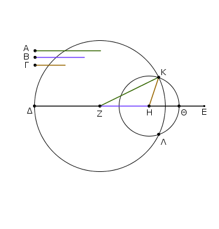
᾿Εκκείσθω τις εὐθεῖα ἡ ΔΕ πεπερασμένη μὲν κατὰ τὸ Δ ἄπειρος δὲ κατὰ τὸ Ε, καὶ κείσθω τῇ μὲν Α ἴση ἡ ΔΖ, τῇ δὲ Β ἴση ἡ ΖΗ, τῇ δὲ Γ ἴση ἡ ΗΘ· καὶ κέντρῳ μὲν τῷ Ζ, διαστήματι δὲ τῷ ΖΔ κύκλος γεγράφθω ὁ ΔΚΛ·
πάλιν κέντρῳ μὲν τῷ Η, διαστήματι δὲ τῷ ΗΘ κύκλος γεγράφθω ὁ ΚΛΘ, καὶ ἐπεζεύχθωσαν αἱ ΚΖ, ΚΗ· λέγω, ὅτι ἐκ τριῶν εὐθειῶν τῶν ἴσων ταῖς Α, Β, Γ τρίγωνον συνέσταται τὸ ΚΖΗ.
᾿Επεὶ γὰρ τὸ Ζ σημεῖον κέντρον ἐστὶ τοῦ ΔΚΛ κύκλου, ἴση ἐστὶν ἡ ΖΔ τῇ ΖΚ· ἀλλὰ ἡ ΖΔ τῇ Α ἐστιν ἴση. καὶ ἡ ΚΖ ἄρα τῇ Α ἐστιν ἴση.
πάλιν, ἐπεὶ τὸ Η σημεῖον κέντρον ἐστὶ τοῦ ΛΚΘ κύκλου, ἴση ἐστὶν ἡ ΗΘ τῇ ΗΚ· ἀλλὰ ἡ ΗΘ τῇ Γ ἐστιν ἴση· καὶ ἡ ΚΗ ἄρα τῇ Γ ἐστιν ἴση. ἐστὶ δὲ καὶ ἡ ΖΗ τῇ Β ἴση· αἱ τρεῖς ἄρα εὐθεῖαι αἱ ΚΖ, ΖΗ, ΗΚ τρισὶ ταῖς Α, Β, Γ ἴσαι εἰσίν.
᾿Εκ τριῶν ἄρα εὐθειῶν τῶν ΚΖ, ΖΗ, ΗΚ, αἵ εἰσιν ἴσαι τρισὶ ταῖς δοθείσαις εὐθείαις ταῖς Α, Β, Γ, τρίγωνον συνέσταται τὸ ΚΖΗ· ὅπερ ἔδει ποιῆσαι.
Πρὸς τῇ δοθείσῃ εὐθείᾳ καὶ τῷ πρὸς αὐτῇ σημείῳ τῇ δοθείσῃ γωνίᾳ εὐθυγράμμῳ ἴσην γωνίαν εὐθύγραμμον συστήσασθαι.
῎Εστω ἡ μὲν δοθεῖσα εὐθεῖα ἡ ΑΒ, τὸ δὲ πρὸς αὐτῇ σημεῖον τὸ Α, ἡ δὲ δοθεῖσα γωνία εὐθύγραμμος ἡ ὑπὸ ΔΓΕ· δεῖ δὴ πρὸς τῇ δοθείσῃ εὐθείᾳ τῇ ΑΒ καὶ τῷ πρὸς αὐτῇ σημείῳ τῷ Α τῇ δοθείσῃ γωνίᾳ εὐθυγράμμῳ τῇ ὑπὸ ΔΓΕ ἴσην γωνίαν εὐθύγραμμον συστήσασθαι.
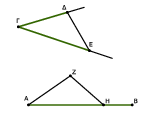
Εἰλήφθω ἐφ᾿ ἑκατέρας τῶν ΓΔ, ΓΕ τυχόντα σημεῖα τὰ Δ, Ε, καὶ ἐπεζεύχθω ἡ ΔΕ· καὶ ἐκ τριῶν εὐθειῶν, αἵ εἰσιν ἴσαι τρισὶ ταῖς ΓΔ, ΔΕ, ΓΕ, τρίγωνον συνεστάτω τὸ ΑΖΗ, ὥστε ἴσην εἶναι τὴν μὲν ΓΔ τῇ ΑΖ, τὴν δὲ ΓΕ τῇ ΑΗ, καὶ ἔτι τὴν ΔΕ τῇ ΖΗ.
᾿Επεὶ οὖν δύο αἱ ΔΓ, ΓΕ δύο ταῖς ΖΑ, ΑΗ ἴσαι εἰσὶν ἑκατέρα ἑκατέρᾳ, καὶ βάσις ἡ ΔΕ βάσει τῇ ΖΗ ἴση, γωνία ἄρα ἡ ὑπὸ ΔΓΕ γωνίᾳ τῇ ὑπὸ ΖΑΗ ἐστιν ἴση.
Πρὸς ἄρα τῇ δοθείσῃ εὐθείᾳ τῇ ΑΒ καὶ τῷ πρὸς αὐτῇ σημείῳ τῷ Α τῇ δοθείσῃ γωνίᾳ εὐθυγράμμῳ τῇ ὑπὸ ΔΓΕ ἴση γωνία εὐθύγραμμος συνέσταται ἡ ὑπὸ ΖΑΗ· ὅπερ ἔδει ποιῆσαι.
᾿Εὰν δύο τρίγωνα τὰς δύο πλευρὰς [ταῖς] δύο πλευραῖς ἴσας ἔχῃ ἑκατέραν ἑκατέρᾳ, τὴν δὲ γωνίαν τῆς γωνίας μείζονα ἔχῃ τὴν ὑπὸ τῶν ἴσων εὐθειῶν περιεχομένην, καὶ τὴν βάσιν τῆς βάσεως μείζονα ἕξει.
῎Εστω δύο τρίγωνα τὰ ΑΒΓ, ΔΕΖ τὰς δύο πλευρὰς τὰς ΑΒ, ΑΓ ταῖς δύο πλευραῖς ταῖς ΔΕ, ΔΖ ἴσας ἔχοντα ἑκατέραν ἑκατέρᾳ, τὴν μὲν ΑΒ τῇ ΔΕ τὴν δὲ ΑΓ τῇ ΔΖ, ἡ δὲ πρὸς τῷ Α γωνία τῆς πρὸς τῷ Δ γωνίας μείζων ἔστω· λέγω, ὅτι καὶ βάσις ἡ ΒΓ βάσεως τῆς ΕΖ μείζων ἐστίν.
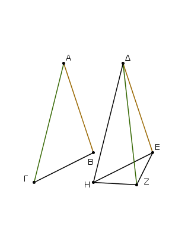
᾿Επεὶ γὰρ μείζων ἡ ὑπὸ ΒΑΓ γωνία τῆς ὑπὸ ΕΔΖ γωνίας, συνεστάτω πρὸς τῇ ΔΕ εὐθείᾳ καὶ τῷ πρὸς αὐτῇ σημείῳ τῷ Δ τῇ ὑπὸ ΒΑΓ γωνίᾳ ἴση ἡ ὑπὸ ΕΔΗ, καὶ κείσθω ὁποτέρᾳ τῶν ΑΓ, ΔΖ ἴση ἡ ΔΗ, καὶ ἐπεζεύχθωσαν αἱ ΕΗ, ΖΗ.
᾿Επεὶ οὖν ἴση ἐστὶν ἡ μὲν ΑΒ τῇ ΔΕ, ἡ δὲ ΑΓ τῇ ΔΗ, δύο δὴ αἱ ΒΑ, ΑΓ δυσὶ ταῖς ΕΔ, ΔΗ ἴσαι εἰσὶν ἑκατέρα ἑκατέρᾳ· καὶ γωνία ἡ ὑπὸ ΒΑΓ γωνίᾳ τῇ ὑπὸ ΕΔΗ ἴση· βάσις ἄρα ἡ ΒΓ βάσει τῇ ΕΗ ἐστιν ἴση.
oindent
πάλιν, ἐπεὶ ἴση ἐστὶν ἡ ΔΖ τῇ ΔΗ, ἴση ἐστὶ καὶ ἡ ὑπὸ ΔΗΖ γωνία τῇ ὑπὸ ΔΖΗ· μείζων ἄρα ἡ ὑπὸ ΔΖΗ τῆς ὑπὸ ΕΗΖ· πολλῷ ἄρα μείζων ἐστὶν ἡ ὑπὸ ΕΖΗ τῆς ὑπὸ ΕΗΖ. καὶ ἐπεὶ τρίγωνόν ἐστι τὸ ΕΖΗ μείζονα ἔχον τὴν ὑπὸ ΕΖΗ γωνίαν τῆς ὑπὸ ΕΗΖ, ὑπὸ δὲ τὴν μείζονα γωνίαν ἡ μείζων πλευρὰ ὑποτείνει, μείζων ἄρα καὶ πλευρὰ ἡ ΕΗ τῆς ΕΖ. ἴση δὲ ἡ ΕΗ τῇ ΒΓ· μείζων ἄρα καὶ ἡ ΒΓ τῆς ΕΖ.
᾿Εὰν ἄρα δύο τρίγωνα τὰς δύο πλευρὰς δυσὶ πλευραῖς ἴσας ἔχῃ ἑκατέραν ἑκατέρᾳ, τὴν δὲ γωνίαν τῆς γωνίας μείζονα ἔχῃ τὴν ὑπὸ τῶν ἴσων εὐθειῶν περιεχομένην, καὶ τὴν βάσιν τῆς βάσεως μείζονα ἕξει· ὅπερ ἔδει δεῖξαι.
᾿Εὰν δύο τρίγωνα τὰς δύο πλευρὰς δυσὶ πλευραῖς ἴσας ἔχῃ ἑκατέραν ἑκατέρᾳ, τὴν δὲ βάσιν τῆς βάσεως μείζονα ἔχῃ, καὶ τὴν γωνίαν τῆς γωνίας μείζονα ἕξει τὴν ὑπὸ τῶν ἴσων εὐθειῶν περιεχομένην.
῎Εστω δύο τρίγωνα τὰ ΑΒΓ, ΔΕΖ τὰς δύο πλευρὰς τὰς ΑΒ, ΑΓ ταῖς δύο πλευραῖς ταῖς ΔΕ, ΔΖ ἴσας ἔχοντα ἑκατέραν ἑκατέρᾳ, τὴν μὲν ΑΒ τῇ ΔΕ, τὴν δὲ ΑΓ τῇ ΔΖ· βάσις δὲ ἡ ΒΓ βάσεως τῆς ΕΖ μείζων ἔστω· λέγω, ὅτι καὶ γωνία ἡ ὑπὸ ΒΑΓ γωνίας τῆς ὑπὸ ΕΔΖ μείζων ἐστίν.
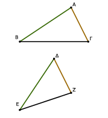
Εἰ γὰρ μή, ἤτοι ἴση ἐστὶν αὐτῇ ἢ ἐλάσσων·
ἴση μὲν οὖν οὐκ ἔστιν ἡ ὑπὸ ΒΑΓ τῇ ὑπὸ ΕΔΖ· ἴση γὰρ ἂν ἦν καὶ βάσις ἡ ΒΓ βάσει τῇ ΕΖ· οὐκ ἔστι δέ. οὐκ ἄρα ἴση ἐστὶ γωνία ἡ ὑπὸ ΒΑΓ τῇ ὑπὸ ΕΔΖ·
οὐδὲ μὴν ἐλάσσων ἐστὶν ἡ ὑπὸ ΒΑΓ τῆς ὑπὸ ΕΔΖ· ἐλάσσων γὰρ ἂν ἦν καὶ βάσις ἡ ΒΓ βάσεως τῆς ΕΖ· οὐκ ἔστι δέ· οὐκ ἄρα ἐλάσσων ἐστὶν ἡ ὑπὸ ΒΑΓ γωνία τῆς ὑπὸ ΕΔΖ.
ἐδείχθη δέ, ὅτι οὐδὲ ἴση· μείζων ἄρα ἐστὶν ἡ ὑπὸ ΒΑΓ τῆς ὑπὸ ΕΔΖ.
᾿Εὰν ἄρα δύο τρίγωνα τὰς δύο πλευρὰς δυσὶ πλευραῖς ἴσας ἔχῃ ἑκατέραν ἑκάτερᾳ, τὴν δὲ βασίν τῆς βάσεως μείζονα ἔχῃ, καὶ τὴν γωνίαν τῆς γωνίας μείζονα ἕξει τὴν ὑπὸ τῶν ἴσων εὐθειῶν περιεχομένην· ὅπερ ἔδει δεῖξαι.
᾿Εὰν δύο τρίγωνα τὰς δύο γωνίας δυσὶ γωνίαις ἴσας ἔχῃ ἑκατέραν ἑκατέρᾳ καὶ μίαν πλευρὰν μιᾷ πλευρᾷ ἴσην ἤτοι τὴν πρὸς ταῖς ἴσαις γωνίαις ἢ τὴν ὑποτείνουσαν ὑπὸ μίαν τῶν ἴσων γωνιῶν, καὶ τὰς λοιπὰς πλευρὰς ταῖς λοιπαῖς πλευραῖς ἴσας ἕξει [ἑκατέραν ἑκατέρᾳ] καὶ τὴν λοιπὴν γωνίαν τῇ λοιπῇ γωνίᾳ.
῎Εστω δύο τρίγωνα τὰ ΑΒΓ, ΔΕΖ τὰς δύο γωνίας τὰς
ὑπὸ ΑΒΓ, ΒΓΑ δυσὶ ταῖς ὑπὸ ΔΕΖ, ΕΖΔ ἴσας ἔχοντα ἑκατέραν ἑκατέρᾳ, τὴν μὲν ὑπὸ ΑΒΓ τῇ ὑπὸ ΔΕΖ, τὴν δὲ ὑπὸ ΒΓΑ τῇ ὑπὸ ΕΖΔ· ἐχέτω δὲ καὶ μίαν πλευρὰν μιᾷ πλευρᾷ ἴσην, πρότερον τὴν πρὸς ταῖς ἴσαις γωνίαις τὴν ΒΓ τῇ ΕΖ· λέγω, ὅτι καὶ τὰς λοιπὰς πλευρὰς ταῖς λοιπαῖς πλευραῖς ἴσας ἕξει ἑκατέραν ἑκατέρᾳ, τὴν μὲν ΑΒ τῇ ΔΕ τὴν δὲ ΑΓ τῇ ΔΖ, καὶ τὴν λοιπὴν γωνίαν τῇ λοιπῇ γωνίᾳ, τὴν ὑπὸ ΒΑΓ τῇ ὑπὸ ΕΔΖ.
Εἰ γὰρ ἄνισός ἐστιν ἡ ΑΒ τῇ ΔΕ, μία αὐτῶν μείζων ἐστίν. ἔστω μείζων ἡ ΑΒ, καὶ κείσθω τῇ ΔΕ ἴση ἡ ΒΗ, καὶ ἐπεζεύχθω ἡ ΗΓ.
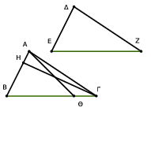
᾿Επεὶ οὖν ἴση ἐστὶν ἡ μὲν ΒΗ τῇ ΔΕ, ἡ δὲ ΒΓ τῇ ΕΖ, δύο δὴ αἱ ΒΗ, ΒΓ δυσὶ ταῖς ΔΕ, ΕΖ ἴσαι εἰσὶν ἑκατέρα ἑκατέρᾳ· καὶ γωνία ἡ ὑπὸ ΗΒΓ γωνίᾳ τῇ ὑπὸ ΔΕΖ ἴση ἐστίν· βάσις ἄρα ἡ ΗΓ βάσει τῇ ΔΖ ἴση ἐστίν, καὶ τὸ ΗΒΓ τρίγωνον τῷ ΔΕΖ τριγώνῳ ἴσον ἐστίν, καὶ αἱ λοιπαὶ γωνίαι ταῖς λοιπαῖς γωνίαις ἴσαι ἔσονται, ὑφ᾿ ἃς αἱ ἴσαι πλευραὶ ὑποτείνουσιν· ἴση ἄρα ἡ ὑπὸ ΗΓΒ γωνία τῇ ὑπὸ ΔΖΕ. ἀλλὰ ἡ ὑπὸ ΔΖΕ τῇ ὑπὸ ΒΓΑ ὑπόκειται ἴση· καὶ ἡ ὑπὸ ΒΓΗ ἄρα τῇ ὑπὸ ΒΓΑ ἴση ἐστίν, ἡ ἐλάσσων τῇ μείζονι· ὅπερ ἀδύνατον. οὐκ ἄρα ἄνισός ἐστιν ἡ ΑΒ τῇ ΔΕ. ἴση ἄρα.
ἔστι δὲ καὶ ἡ ΒΓ τῇ ΕΖ ἴση· δύο δὴ αἱ ΑΒ, ΒΓ δυσὶ ταῖς ΔΕ, ΕΖ ἴσαι εἰσὶν ἑκατέρα ἑκατέρᾳ· καὶ γωνία ἡ ὑπὸ ΑΒΓ γωνίᾳ τῇ ὑπὸ ΔΕΖ ἐστιν ἴση· βάσις ἄρα ἡ ΑΓ βάσει τῇ ΔΖ ἴση ἐστίν, καὶ λοιπὴ γωνία ἡ ὑπὸ ΒΑΓ τῇ λοιπῇ γωνίᾳ τῇ ὑπὸ ΕΔΖ ἴση ἐστίν.
᾿Αλλὰ δὴ πάλιν ἔστωσαν αἱ ὑπὸ τὰς ἴσας γωνίας πλευραὶ ὑποτείνουσαι ἴσαι, ὡς ἡ ΑΒ τῇ ΔΕ· λέγω πάλιν, ὅτι καὶ αἱ λοιπαὶ πλευραὶ ταῖς λοιπαῖς πλευραῖς ἴσαι ἔσονται, ἡ μὲν ΑΓ τῇ ΔΖ, ἡ δὲ ΒΓ τῇ ΕΖ καὶ ἔτι ἡ λοιπὴ γωνία ἡ ὑπὸ ΒΑΓ τῇ λοιπῇ γωνίᾳ τῇ ὑπὸ ΕΔΖ ἴση ἐστίν.
Εἰ γὰρ ἄνισός ἐστιν ἡ ΒΓ τῇ ΕΖ, μία αὐτῶν μείζων ἐστίν. ἔστω μείζων, εἰ δυνατόν, ἡ ΒΓ, καὶ κείσθω τῇ ΕΖ ἴση ἡ ΒΘ, καὶ ἐπεζεύχθω ἡ ΑΘ. καὶ ἐπεἱ ἴση ἐστὶν ἡ μὲν ΒΘ τῇ ΕΖ ἡ δὲ ΑΒ τῇ ΔΕ, δύο δὴ αἱ ΑΒ, ΒΘ δυσὶ ταῖς ΔΕ, ΕΖ ἴσαι εἰσὶν ἑκατέρα ἑκαρέρᾳ· καὶ γωνίας ἴσας περιέχουσιν· βάσις ἄρα ἡ ΑΘ βάσει τῇ ΔΖ ἴση ἐστίν, καὶ τὸ ΑΒΘ τρίγωνον τῷ ΔΕΖ τριγώνῳ ἴσον ἐστίν, καὶ αἱ λοιπαὶ γωνίαι ταῖς λοιπαῖς γωνίαις ἴσαι ἔσονται, ὑφ᾿ ἃς αἱ ἴσας πλευραὶ ὑποτείνουσιν· ἴση ἄρα ἐστὶν ἡ ὑπὸ ΒΘΑ γωνία τῇ ὑπὸ ΕΖΔ. ἀλλὰ ἡ ὑπὸ ΕΖΔ τῇ ὑπὸ ΒΓΑ ἐστιν ἴση· τριγώνου δὴ τοῦ ΑΘΓ ἡ ἐκτὸς γωνία ἡ ὑπὸ ΒΘΑ ἴση ἐστὶ τῇ ἐντὸς καὶ ἀπεναντίον τῇ ὑπὸ ΒΓΑ· ὅπερ ἀδύνατον.
οὐκ ἄρα ἄνισός ἐστιν ἡ ΒΓ τῇ ΕΖ· ἴση ἄρα. ἐστὶ δὲ καὶ ἡ ΑΒ τῇ ΔΕ ἴση. δύο δὴ αἱ ΑΒ, ΒΓ δύο ταῖς ΔΕ, ΕΖ ἴσαι εἰσὶν ἑκατέρα ἑκατέρᾳ· καὶ γωνίας ἴσας περιέχουσι· βάσις ἄρα ἡ ΑΓ βάσει τῇ ΔΖ ἴση ἐστίν, καὶ τὸ ΑΒΓ τρίγωνον τῷ ΔΕΖ τριγώνῳ ἴσον καὶ λοιπὴ γωνία ἡ ὑπὸ ΒΑΓ τῇ λοιπῂ γωνίᾳ τῇ ὑπὸ ΕΔΖ ἴση.
᾿Εὰν ἄρα δύο τρίγωνα τὰς δύο γωνίας δυσὶ γωνίαις ἴσας ἔχῃ ἑκατέραν ἑκατέρᾳ καὶ μίαν πλευρὰν μιᾷ πλευρᾷ ἴσην ἤτοι τὴν πρὸς ταῖς ἴσαις γωνίαις, ἢ τὴν ὑποτείνουσαν ὑπὸ μίαν τῶν ἴσων γωνιῶν, καὶ τὰς λοιπὰς πλευρὰς ταῖς λοιπαῖς πλευραῖς ἴσας ἕξει καὶ τὴν λοιπὴν γωνίαν τῇ λοιπῇ γωνίᾳ· ὅπερ ἔδει δεῖξαι.
᾿Εὰν εἰς δύο εὐθείας εὐθεῖα ἐμπίπτουσα τὰς ἐναλλὰξ γωνίας ἴσας ἀλλήλαις ποιῇ, παράλληλοι ἔσονται ἀλλήλαις αἱ εὐθεῖαι.
Εἰς γὰρ δύο εὐθείας τὰς ΑΒ, ΓΔ εὐθεῖα ἐμπίπτουσα ἡ ΕΖ τὰς ἐναλλὰξ γωνίας τὰς ὑπὸ ΑΕΖ, ΕΖΔ ἴσας ἀλλήλαις ποιείτω· λέγω, ὅτι παράλληλός ἐστιν ἡ ΑΒ τῇ ΓΔ.
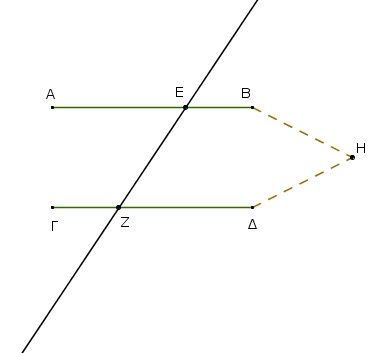
Εἰ γὰρ μή, ἐκβαλλόμεναι αἱ ΑΒ, ΓΔ συμπεσοῦνται ἤτοι ἐπὶ τὰ Β, Δ μέρη ἢ ἐπὶ τὰ Α, Γ. ἐκβεβλήσθωσαν καὶ συμπιπτέτωσαν ἐπὶ τὰ Β, Δ μέρη κατὰ τὸ Η.
τριγώνου δὴ τοῦ ΗΕΖ ἡ ἐκτὸς γωνία ἡ ὑπὸ ΑΕΖ ἴση ἐστὶ τῇ ἐντὸς καὶ ἀπεναντίον τῇ ὑπὸ ΕΖΗ· ὅπερ ἐστὶν ἀδύνατον· οὐκ ἄρα αἱ ΑΒ, ΔΓ ἐκβαλλόμεναι συμπεσοῦνται ἐπὶ τὰ Β, Δ μέρη.
ὁμοίως δὴ δειχθήσεται, ὅτι οὐδὲ ἐπὶ τὰ Α, Γ· αἱ δὲ ἐπὶ μηδέτερα τὰ μέρη συμπίπτουσαι παράλληλοί εἰσιν· παράλληλος ἄρα ἐστὶν ἡ ΑΒ τῇ ΓΔ.
᾿Εὰν ἄρα εἰς δύο εὐθείας εὐθεῖα ἐμπίπτουσα τὰς ἐναλλὰξ γωνίας ἴσας ἀλλήλαις ποιῇ, παράλληλοι ἔσονται αἱ εὐθεῖαι· ὅπερ ἔδει δεῖξαι.
᾿Εὰν εἰς δύο εὐθείας εὐθεῖα ἐμπίπτουσα τὴν ἐκτὸς γωνίαν τῇ ἐντὸς καὶ ἀπεναντίον καὶ ἐπὶ τὰ αὐτὰ μέρη ἴσην ποιῇ ἢ τὰς ἐντὸς καὶ ἐπὶ τὰ αὐτὰ μέρη δυσὶν ὀρθαῖς ἴσας, παράλληλοι ἔσονται ἀλλήλαις αἱ εὐθεῖαι.
Εἰς γὰρ δύο εὐθείας τὰς ΑΒ, ΓΔ εὐθεῖα ἐμπίπτουσα ἡ ΕΖ τὴν ἐκτὸς γωνίαν τὴν ὑπὸ ΕΗΒ τῇ ἐντὸς καὶ ἀπεναντίον γωνίᾳ τῇ ὑπὸ ΗΘΔ ἴσην ποιείτω ἢ τὰς ἐντὸς καὶ ἐπὶ τὰ αὐτὰ μέρη τὰς ὑπὸ ΒΗΘ, ΗΘΔ δυσὶν ὀρθαῖς ἴσας· λέγω, ὅτι παράλληλός ἐστιν ἡ ΑΒ τῇ ΓΔ.
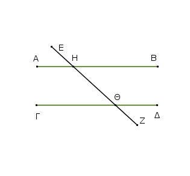
᾿Επεὶ γὰρ ἴση ἐστὶν ἡ ὑπὸ ΕΗΒ τῇ ὑπὸ ΗΘΔ, ἀλλὰ ἡ ὑπὸ ΕΗΒ τῇ ὑπὸ ΑΗΘ ἐστιν ἴση, καὶ ἡ ὑπὸ ΑΗΘ ἄρα τῇ ὑπὸ ΗΘΔ ἐστιν ἴση· καί εἰσιν ἐναλλάξ· παράλληλος ἄρα ἐστὶν ἡ ΑΒ τῇ ΓΔ.
Πάλιν, ἐπεὶ αἱ ὑπὸ ΒΗΘ, ΗΘΔ δύο ὀρθαῖς ἴσαι εἰσίν, εἰσὶ δὲ καὶ αἱ ὑπὸ ΑΗΘ, ΒΗΘ δυσὶν ὀρθαῖς ἴσαι, αἱ ἄρα ὑπὸ ΑΗΘ, ΒΗΘ ταῖς ὑπὸ ΒΗΘ, ΗΘΔ ἴσαι εἰσίν· κοινὴ ἀφῃρήσθω ἡ ὑπὸ ΒΗΘ· λοιπὴ ἄρα ἡ ὑπὸ ΑΗΘ λοιπῇ τῇ ὑπὸ ΗΘΔ ἐστιν ἴση· καί εἰσιν ἐναλλάξ· παράλληλος ἄρα ἐστὶν ἡ ΑΒ τῇ ΓΔ.
᾿Εὰν ἄρα εἰς δύο εὐθείας εὐθεῖα ἐμπίπτουσα τὴν ἐκτὸς γωνίαν τῇ ἐντὸς καὶ ἀπεναντίον καὶ ἐπὶ τὰ αὐτὰ μέρη ἴσην ποιῇ ἢ τὰς ἐντὸς καὶ ἐπὶ τὰ αὐτὰ μέρη δυσὶν ὀρθαῖς ἴσας, παράλληλοι ἔσονται αἱ εὐθεῖαι· ὅπερ ἔδει δεῖξαι.
῾Η εἰς τὰς παραλλήλους εὐθείας εὐθεῖα ἐμπίπτουσα τάς τε ἐναλλὰξ γωνίας ἴσας ἀλλήλαις ποιεῖ καὶ τὴν ἐκτὸς τῇ ἐντὸς καὶ ἀπεναντίον ἴσην καὶ τὰς ἐντὸς καὶ ἐπὶ τὰ αὐτὰ μέρη δυσὶν ὀρθαῖς ἴσας.
Εἰς γὰρ παραλλήλους εὐθείας τὰς ΑΒ, ΓΔ εὐθεῖα ἐμπιπτέτω ἡ ΕΖ· λέγω, ὅτι τὰς ἐναλλὰξ γωνίας τὰς ὑπὸ ΑΗΘ, ΗΘΔ ἴσας ποιεῖ καὶ τὴν ἐκτὸς γωνίαν τὴν ὑπὸ ΕΗΒ τῇ ἐντὸς καὶ ἀπεναντίον τῇ ὑπὸ ΗΘΔ ἴσην καὶ τὰς ἐντὸς καὶ ἐπὶ τὰ αὐτὰ μέρη τὰς ὑπὸ ΒΗΘ, ΗΘΔ δυσὶν ὀρθαῖς ἴσας.
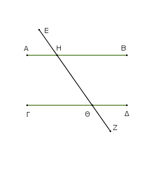
Εἰ γὰρ ἄνισός ἐστιν ἡ ὑπὸ ΑΗΘ τῇ ὑπὸ ΗΘΔ, μία αὐτῶν μείζων ἐστίν.
ἔστω μείζων ἡ ὑπὸ ΑΗΘ· κοινὴ προσκείσθω ἡ ὑπὸ ΒΗΘ· αἱ ἄρα ὑπὸ ΑΗΘ, ΒΗΘ τῶν ὑπὸ ΒΗΘ, ΗΘΔ μείζονές εἰσιν. ἀλλὰ αἱ ὑπὸ ΑΗΘ, ΒΗΘ δυσὶν ὀρθαῖς ἴσαι εἰσίν. [καὶ] αἱ ἄρα ὑπὸ ΒΗΘ, ΗΘΔ δύο ὀρθῶν ἐλάσσονές εἰσιν. αἱ δὲ ἀπ᾿ ἐλασσόνων ἢ δύο ὀρθῶν ἐκβαλλόμεναι εἰς ἄπειρον συμπίπτουσιν· αἱ ἄρα ΑΒ, ΓΔ ἐκβαλλόμεναι εἰς ἄπειρον συμπεσοῦνται· οὐ συμπίπτουσι δὲ διὰ τὸ παραλλήλους αὐτὰς ὑποκεῖσθαι·
οὐκ ἄρα ἄνισός ἐστιν ἡ ὑπὸ ΑΗΘ τῇ ὑπὸ ΗΘΔ· ἴση ἄρα. ἀλλὰ ἡ ὑπὸ ΑΗΘ τῇ ὑπὸ ΕΗΒ ἐστιν ἴση· καὶ ἡ ὑπὸ ΕΗΒ ἄρα τῇ ὑπὸ ΗΘΔ ἐστιν ἴση· κοινὴ προσκείσθω ἡ ὑπὸ ΒΗΘ· αἱ ἄρα ὑπὸ ΕΗΒ, ΒΗΘ ταῖς ὑπὸ ΒΗΘ, ΗΘΔ ἴσαι εἰσίν. ἀλλὰ αἱ ὑπὸ ΕΗΒ, ΒΗΘ δύο ὀρθαῖς ἴσαι εἰσίν· καὶ αἱ ὑπὸ ΒΗΘ, ΗΘΔ ἄρα δύο ὀρθαῖς ἴσαι εἰσίν.
῾Η ἄρα εἰς τὰς παραλλήλους εὐθείας εὐθεῖα ἐμπίπτουσα τάς τε ἐναλλὰξ γωνίας ἴσας ἀλλήλαις ποιεῖ καὶ τὴν ἐκτὸς τῇ ἐντὸς καὶ ἀπεναντίον ἴσην καὶ τὰς ἐντὸς καὶ ἐπὶ τὰ αὐτὰ μέρη δυσὶν ὀρθαῖς ἴσας· ὅπερ ἔδει δεῖξαι.
Αἱ τῇ αὐτῇ εὐθείᾳ παράλληλοι καὶ ἀλλήλαις εἰσὶ παράλληλοι.
῎Εστω ἑκατέρα τῶν ΑΒ, ΓΔ τῇ ΕΖ παράλληλος· λέγω, ὅτι καὶ ἡ ΑΒ τῇ ΓΔ ἐστι παράλληλος.
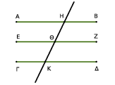
᾿Εμπιπτέτω γὰρ εἰς αὐτὰς εὐθεῖα ἡ ΗΚ. Καὶ ἐπεὶ εἰς παραλλήλους εὐθείας τὰς ΑΒ, ΕΖ εὐθεῖα ἐμπέπτωκεν ἡ ΗΚ, ἴση ἄρα ἡ ὑπὸ ΑΗΚ τῇ ὑπὸ ΗΘΖ. πάλιν, ἐπεὶ εἰς παραλλήλους εὐθείας τὰς ΕΖ, ΓΔ εὐθεῖα ἐμπέπτωκεν ἡ ΗΚ, ἴση ἐστὶν ἡ ὑπὸ ΗΘΖ τῇ ὑπὸ ΗΚΔ. ἐδείχθη δὲ καὶ ἡ ὑπὸ ΑΗΚ τῇ ὑπὸ ΗΘΖ ἴση. καὶ ἡ ὑπὸ ΑΗΚ ἄρα τῇ ὑπὸ ΗΚΔ ἐστιν ἴση· καί εἰσιν ἐναλλάξ. παράλληλος ἄρα ἐστὶν ἡ ΑΒ τῇ ΓΔ.
[Αἱ ἄρα τῇ αὐτῇ εὐθείᾳ παράλληλοι καὶ ἀλλήλαις εἰσὶ παράλληλοι·] ὅπερ ἔδει δεῖξαι.
Διὰ τοῦ δοθέντος σημείου τῇ δοθείσῃ εὐθείᾳ παράλληλον εὐθεῖαν γραμμὴν ἀγαγεῖν.
῎Εστω τὸ μὲν δοθὲν σημεῖον τὸ Α, ἡ δὲ δοθεῖσα εὐθεῖα ἡ ΒΓ· δεῖ δὴ διὰ τοῦ Α σημείου τῇ ΒΓ εὐθείᾳ παράλληλον εὐθεῖαν γραμμὴν ἀγαγεῖν.
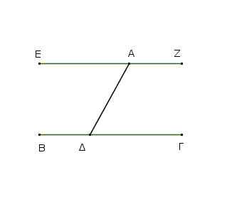
Εἰλήφθω ἐπὶ τῆς ΒΓ τυχὸν σημεῖον τὸ Δ, καὶ ἐπεζεύχθω ἡ ΑΔ· καὶ συνεστάτω πρὸς τῇ ΔΑ εὐθείᾳ καὶ τῷ πρὸς αὐτῇ σημείῳ τῷ Α τῇ ὑπὸ ΑΔΓ γωνίᾳ ἴση ἡ ὑπὸ ΔΑΕ· καὶ ἐκβεβλήσθω ἐπ᾿ εὐθείας τῇ ΕΑ εὐθεῖα ἡ ΑΖ.
Καὶ ἐπεὶ εἰς δύο εὐθείας τὰς ΒΓ, ΕΖ εὐθεῖα ἐμπίπτουσα ἡ ΑΔ τὰς ἐναλλὰξ γωνίας τὰς ὑπὸ ΕΑΔ, ΑΔΓ ἴσας ἀλλήλαις πεποίηκεν, παράλληλος ἄρα ἐστὶν ἡ ΕΑΖ τῇ ΒΓ. Διὰ τοῦ δοθέντος ἄρα σημείου τοῦ Α τῇ δοθείσῃ εὐθείᾳ τῇ ΒΓ παράλληλος εὐθεῖα γραμμὴ ἦκται ἡ ΕΑΖ· ὅπερ ἔδει ποιῆσαι.
Παντὸς τριγώνου μιᾶς τῶν πλευρῶν προσεκβληθείσης ἡ ἐκτὸς γωνία δυσὶ ταῖς ἐντὸς καὶ ἀπεναντίον ἴση ἐστίν, καὶ αἱ ἐντὸς τοῦ τριγώνου τρεῖς γωνίαι δυσὶν ὀρθαῖς ἴσαι εἰσίν.
῎Εστω τρίγωνον τὸ ΑΒΓ, καὶ προσεκβεβλήσθω αὐτοῦ μία πλευρὰ ἡ ΒΓ ἐπὶ τὸ Δ· λέγω, ὅτι ἡ ἐκτὸς γωνία ἡ ὑπὸ ΑΓΔ ἴση ἐστὶ δυσὶ ταῖς ἐντὸς καὶ ἀπεναντίον ταῖς ὑπὸ ΓΑΒ, ΑΒΓ, καὶ αἱ ἐντὸς τοῦ τριγώνου τρεῖς γωνίαι αἱ ὑπὸ ΑΒΓ, ΒΓΑ, ΓΑΒ δυσὶν ὀρθαῖς ἴσαι εἰσίν.
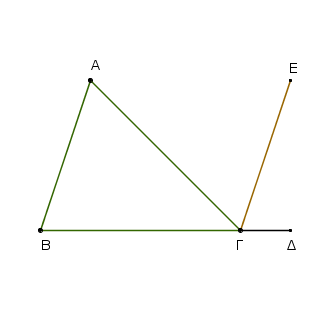
῎Ηχθω γὰρ διὰ τοῦ Γ σημείου τῇ ΑΒ εὐθείᾳ παράλληλος ἡ ΓΕ. Καὶ ἐπεὶ παράλληλός ἐστιν ἡ ΑΒ τῇ ΓΕ, καὶ εἰς αὐτὰς ἐμπέπτωκεν ἡ ΑΓ, αἱ ἐναλλὰξ γωνίαι αἱ ὑπὸ ΒΑΓ, ΑΓΕ ἴσαι ἀλλήλαις εἰσίν.
πάλιν, ἐπεὶ παράλληλός ἐστιν ἡ ΑΒ τῇ ΓΕ, καὶ εἰς αὐτὰς ἐμπέπτωκεν εὐθεῖα ἡ ΒΔ, ἡ ἐκτὸς γωνία ἡ ὑπὸ ΕΓΔ ἴση ἐστὶ τῇ ἐντὸς καὶ ἀπεναντίον τῇ ὑπὸ ΑΒΓ. ἐδείχθη δὲ καὶ ἡ ὑπὸ ΑΓΕ τῇ ὑπὸ ΒΑΓ ἴση· ὅλη ἄρα ἡ ὑπὸ ΑΓΔ γωνία ἴση ἐστὶ δυσὶ ταῖς ἐντὸς καὶ ἀπεναντίον ταῖς ὑπὸ ΒΑΓ, ΑΒΓ.
Κοινὴ προσκείσθω ἡ ὑπὸ ΑΓΒ· αἱ ἄρα ὑπὸ ΑΓΔ, ΑΓΒ τρισὶ ταῖς ὑπὸ ΑΒΓ, ΒΓΑ, ΓΑΒ ἴσαι εἰσίν. ἀλλ᾿ αἱ ὑπὸ ΑΓΔ, ΑΓΒ δυσὶν ὀρθαῖς ἴσαι εἰσίν· καὶ αἱ ὑπὸ ΑΓΒ, ΓΒΑ, ΓΑΒ ἄρα δυσὶν ὀρθαῖς ἴσαι εἰσίν.
Παντὸς ἄρα τριγώνου μιᾶς τῶν πλευρῶν προσεκβληθείσης ἡ ἐκτὸς γωνία δυσὶ ταῖς ἐντὸς καὶ ἀπεναντίον ἴση ἐστίν, καὶ αἱ ἐντὸς τοῦ τριγώνου τρεῖς γωνίαι δυσὶν ὀρθαῖς ἴσαι εἰσίν· ὅπερ ἔδει δεῖξαι.
Αἱ τὰς ἴσας τε καὶ παραλλήλους ἐπὶ τὰ αὐτὰ μέρη ἐπιζευγνύουσαι εὐθεῖαι καὶ αὐταὶ ἴσαι τε καὶ παράλληλοί εἰσιν.
῎Εστωσαν ἴσαι τε καὶ παράλληλοι αἱ ΑΒ, ΓΔ, καὶ ἐπιζευγνύτωσαν αὐτὰς ἐπὶ τὰ αὐτὰ μέρη εὐθεῖαι αἱ ΑΓ, ΒΔ· λέγω, ὅτι καὶ αἱ ΑΓ, ΒΔ ἴσαι τε καὶ παράλληλοί εἰσιν.
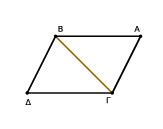
᾿Επεζεύχθω ἡ ΒΓ. καὶ ἐπεὶ παράλληλός ἐστιν ἡ ΑΒ τῇ ΓΔ, καὶ εἰς αὐτὰς ἐμπέπτωκεν ἡ ΒΓ, αἱ ἐναλλὰξ γωνίαι αἱ ὑπὸ ΑΒΓ, ΒΓΔ ἴσαι ἀλλήλαις εἰσίν.
καὶ ἐπεὶ ἴση ἐστὶν ἡ ΑΒ τῇ ΓΔ κοινὴ δὲ ἡ ΒΓ, δύο δὴ αἱ ΑΒ, ΒΓ δύο ταῖς ΒΓ, ΓΔ ἴσαι εἰσίν· καὶ γωνία ἡ ὑπὸ ΑΒΓ γωνίᾳ τῇ ὑπὸ ΒΓΔ ἴση· βάσις ἄρα ἡ ΑΓ βάσει τῇ ΒΔ ἐστιν ἴση, καὶ τὸ ΑΒΓ τρίγωνον τῷ ΒΓΔ τριγώνῳ ἴσον ἐστίν, καὶ αἱ λοιπαὶ γωνίαι ταῖς λοιπαῖς γωνίαις ἴσαι ἔσονται ἑκατέρα ἑκατέρᾳ, ὑφ᾿ ἃς αἱ ἴσαι πλευραὶ ὑποτείνουσιν· ἴση ἄρα ἡ ὑπὸ ΑΓΒ γωνία τῇ ὑπὸ ΓΒΔ.
καὶ ἐπεὶ εἰς δύο εὐθείας τὰς ΑΓ, ΒΔ εὐθεῖα ἐμπίπτουσα ἡ ΒΓ τὰς ἐναλλὰξ γωνίας ἴσας ἀλλήλαις πεποίηκεν, παράλληλος ἄρα ἐστὶν ἡ ΑΓ τῇ ΒΔ. ἐδείχθη δὲ αὐτῇ καὶ ἴση.
Αἱ ἄρα τὰς ἴσας τε καὶ παραλλήλους ἐπὶ τὰ αὐτὰ μέρη ἐπιζευγνύουσαι εὐθεῖαι καὶ αὐταὶ ἴσαι τε καὶ παράλληλοί εἰσιν· ὅπερ ἔδει δεῖξαι.
Τῶν παραλληλογράμμων χωρίων αἱ ἀπεναντίον πλευραί τε καὶ γωνίαι ἴσαι ἀλλήλαις εἰσίν, καὶ ἡ διάμετρος αὐτὰ δίχα τέμνει.
῎Εστω παραλληλόγραμμον χωρίον τὸ ΑΓΔΒ, διάμετρος δὲ αὐτοῦ ἡ ΒΓ· λέγω, ὅτι τοῦ ΑΓΔΒ παραλληλογράμμου αἱ ἀπεναντίον πλευραί τε καὶ γωνίαι ἴσαι ἀλλήλαις εἰσίν, καὶ ἡ ΒΓ διάμετρος αὐτὸ δίχα τέμνει.
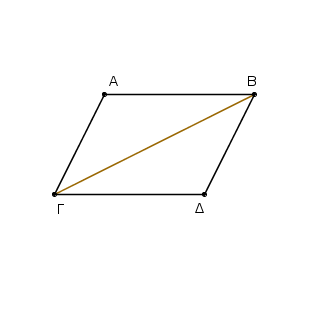
᾿Επεὶ γὰρ παράλληλός ἐστιν ἡ ΑΒ τῇ ΓΔ, καὶ εἰς αὐτὰς ἐμπέπτωκεν εὐθεῖα ἡ ΒΓ, αἱ ἐναλλὰξ γωνίαι αἱ ὑπὸ ΑΒΓ, ΒΓΔ ἴσαι ἀλλήλαις εἰσίν.
πάλιν ἐπεὶ παράλληλός ἐστιν ἡ ΑΓ τῇ ΒΔ, καὶ εἰς αὐτὰς ἐμπέπτωκεν ἡ ΒΓ, αἱ ἐναλλὰξ γωνίαι αἱ ὑπὸ ΑΓΒ, ΓΒΔ ἴσαι ἀλλήλαις εἰσίν. δύο δὴ τρίγωνά ἐστι τὰ ΑΒΓ, ΒΓΔ τὰς δύο γωνίας τὰς ὑπὸ ΑΒΓ, ΒΓΑ δυσὶ ταῖς ὑπὸ ΒΓΔ, ΓΒΔ ἴσας ἔχοντα ἑκατέραν ἑκατέρᾳ καὶ μίαν πλευρὰν μιᾷ πλευρᾷ ἴσην τὴν πρὸς ταῖς ἴσαις γωνίαις κοινὴν αὐτῶν τὴν ΒΓ· καὶ τὰς λοιπὰς ἄρα πλευρὰς ταῖς λοιπαῖς ἴσας ἕξει ἑκατέραν ἑκατέρᾳ καὶ τὴν λοιπὴν γωνίαν τῇ λοιπῇ γωνίᾳ· ἴση ἄρα ἡ μὲν ΑΒ πλευρὰ τῇ ΓΔ, ἡ δὲ ΑΓ τῇ ΒΔ, καὶ ἔτι ἴση ἐστὶν ἡ ὑπὸ ΒΑΓ γωνία τῇ ὑπὸ ΓΔΒ.
καὶ ἐπεὶ ἴση ἐστὶν ἡ μὲν ὑπὸ ΑΒΓ γωνία τῇ ὑπὸ ΒΓΔ, ἡ δὲ ὑπὸ ΓΒΔ τῇ ὑπὸ ΑΓΒ, ὅλη ἄρα ἡ ὑπὸ ΑΒΔ ὅλῃ τῇ ὑπὸ ΑΓΔ ἐστιν ἴση. ἐδείχθη δὲ καὶ ἡ ὑπὸ ΒΑΓ τῇ ὑπὸ ΓΔΒ ἴση.
Τῶν ἄρα παραλληλογράμμων χωρίων αἱ ἀπεναντίον πλευραί τε καὶ γωνίαι ἴσαι ἀλλήλαις εἰσίν.
Λέγω δή, ὅτι καὶ ἡ διάμετρος αὐτὰ δίχα τέμνει. ἐπεὶ γὰρ ἴση ἐστὶν ἡ ΑΒ τῇ ΓΔ, κοινὴ δὲ ἡ ΒΓ, δύο δὴ αἱ ΑΒ, ΒΓ δυσὶ ταῖς ΓΔ, ΒΓ ἴσαι εἰσὶν ἑκατέρα ἑκατέρᾳ· καὶ γωνία ἡ ὑπὸ ΑΒΓ γωνίᾳ τῇ ὑπὸ ΒΓΔ ἴση. καὶ βάσις ἄρα ἡ ΑΓ τῇ ΔΒ ἴση. καὶ τὸ ΑΒΓ [ἄρα] τρίγωνον τῷ ΒΓΔ τριγώνῳ ἴσον ἐστίν. ῾Η ἄρα ΒΓ διάμετρος δίχα τέμνει τὸ ΑΒΓΔ παραλληλόγραμμον· ὅπερ ἔδει δεῖξαι.
Τὰ παραλληλόγραμμα τὰ ἐπὶ τῆς αὐτῆς βάσεως ὄντα καὶ ἐν ταῖς αὐταῖς παραλλήλοις ἴσα ἀλλήλοις ἐστίν.
῎Εστω παραλληλόγραμμα τὰ ΑΒΓΔ, ΕΒΓΖ ἐπὶ τῆς αὐτῆς βάσεως τῆς ΒΓ καὶ ἐν ταῖς αὐταῖς παραλλήλοις ταῖς ΑΖ, ΒΓ· λέγω, ὅτι ἴσον ἐστὶ τὸ ΑΒΓΔ τῷ ΕΒΓΖ παραλληλογράμμῳ.
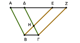
᾿Επεὶ γὰρ παραλληλόγραμμόν ἐστι τὸ ΑΒΓΔ, ἴση ἐστὶν ἡ ΑΔ τῇ ΒΓ. διὰ τὰ αὐτὰ δὴ καὶ ἡ ΕΖ τῇ ΒΓ ἐστιν ἴση· ὥστε καὶ ἡ ΑΔ τῇ ΕΖ ἐστιν ἴση· καὶ κοινὴ ἡ ΔΕ· ὅλη ἄρα ἡ ΑΕ ὅλῃ τῇ ΔΖ ἐστιν ἴση.
ἔστι δὲ καὶ ἡ ΑΒ τῇ ΔΓ ἴση· δύο δὴ αἱ ΕΑ, ΑΒ δύο ταῖς ΖΔ, ΔΓ ἴσαι εἰσὶν ἑκατέρα ἑκατέρᾳ· καὶ γωνία ἡ ὑπὸ ΖΔΓ γωνίᾳ τῇ ὑπὸ ΕΑΒ ἐστιν ἴση ἡ ἐκτὸς τῇ ἐντός· βάσις ἄρα ἡ ΕΒ βάσει τῇ ΖΓ ἴση ἐστίν, καὶ τὸ ΕΑΒ τρίγωνον τῷ ΔΖΓ τριγώνῳ ἴσον ἔσται· κοινὸν ἀφῃρήσθω τὸ ΔΗΕ·
λοιπὸν ἄρα τὸ ΑΒΗΔ τραπέζιον λοιπῷ τῷ ΕΗΓΖ τραπεζίῳ ἐστὶν ἴσον· κοινὸν προσκείσθω τὸ ΗΒΓ τρίγωνον· ὅλον ἄρα τὸ ΑΒΓΔ παραλληλόγραμμον ὅλῳ τῷ ΕΒΓΖ παραλληλογράμμῳ ἴσον ἐστίν. Τὰ ἄρα παραλληλόγραμμα τὰ ἐπὶ τῆς αὐτῆς βάσεως ὄντα καὶ ἐν ταῖς αὐταῖς παραλλήλοις ἴσα ἀλλήλοις ἐστίν· ὅπερ ἔδει δεῖξαι.
Τὰ παραλληλόγραμμα τὰ ἐπὶ ἴσων βάσεων ὄντα καὶ ἐν ταῖς αὐταῖς παραλλήλοις ἴσα ἀλλήλοις ἐστίν.
῎Εστω παραλληλόγραμμα τὰ ΑΒΓΔ, ΕΖΗΘ ἐπὶ ἴσων βάσεων ὄντα τῶν ΒΓ, ΖΗ καὶ ἐν ταῖς αὐταῖς παραλλήλοις ταῖς ΑΘ, ΒΗ· λέγω, ὅτι ἴσον ἐστὶ τὸ ΑΒΓΔ παραλληλόγραμμον τῷ ΕΖΗΘ.
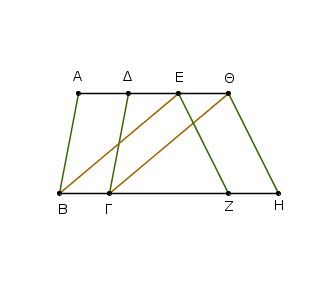
᾿Επεζεύχθωσαν γὰρ αἱ ΒΕ, ΓΘ. καὶ ἐπεὶ ἴση ἐστὶν ἡ ΒΓ τῇ ΖΗ, ἀλλὰ ἡ ΖΗ τῇ ΕΘ ἐστιν ἴση, καὶ ἡ ΒΓ ἄρα τῇ ΕΘ ἐστιν ἴση. εἰσὶ δὲ καὶ παράλληλοι. καὶ ἐπιζευγνύουσιν αὐτὰς αἱ ΕΒ, ΘΓ· αἱ δὲ τὰς ἴσας τε καὶ παραλλήλους ἐπὶ τὰ αὐτὰ μέρη ἐπιζευγνύουσαι ἴσαι τε καὶ παράλληλοί εἰσι [καὶ αἱ ΕΒ, ΘΓ ἄρα ἴσαι τέ εἰσι καὶ παράλληλοι].
παραλληλόγραμμον ἄρα ἐστὶ τὸ ΕΒΓΘ. καί ἐστιν ἴσον τῷ ΑΒΓΔ· βάσιν τε γὰρ αὐτῷ τὴν αὐτὴν ἔχει τὴν ΒΓ, καὶ ἐν ταῖς αὐταῖς παραλλήλοις ἐστὶν αὐτῷ ταῖς ΒΓ, ΑΘ.
δὶα τὰ αὐτὰ δὴ καὶ τὸ ΕΖΗΘ τῷ αὐτῷ τῷ ΕΒΓΘ ἐστιν ἴσον· ὥστε καὶ τὸ ΑΒΓΔ παραλληλόγραμμον τῷ ΕΖΗΘ ἐστιν ἴσον.
Τὰ ἄρα παραλληλόγραμμα τὰ ἐπὶ ἴσων βάσεων ὄντα καὶ ἐν ταῖς αὐταῖς παραλλήλοις ἴσα ἀλλήλοις ἐστίν· ὅπερ ἔδει δεῖξαι.
Τὰ τρίγωνα τὰ ἐπὶ τῆς αὐτῆς βάσεως ὄντα καὶ ἐν ταῖς αὐταῖς παραλλήλοις ἴσα ἀλλήλοις ἐστίν.
῎Εστω τρίγωνα τὰ ΑΒΓ, ΔΒΓ ἐπὶ τῆς αὐτῆς βάσεως τῆς ΒΓ καὶ ἐν ταῖς αὐταῖς παραλλήλοις ταῖς ΑΔ, ΒΓ· λέγω, ὅτι ἴσον ἐστὶ τὸ ΑΒΓ τρίγωνον τῷ ΔΒΓ τριγώνῳ.
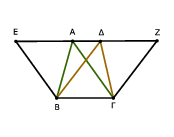
᾿Εκβεβλήσθω ἡ ΑΔ ἐφ᾿ ἑκάτερα τὰ μέρη ἐπὶ τὰ Ε, Ζ, καὶ διὰ μὲν τοῦ Β τῇ ΓΑ παράλληλος ἤχθω ἡ ΒΕ, δὶα δὲ τοῦ Γ τῇ ΒΔ παράλληλος ἤχθω ἡ ΓΖ. παραλληλόγραμμον ἄρα ἐστὶν ἑκάτερον τῶν ΕΒΓΑ, ΔΒΓΖ· καί εἰσιν ἴσα·
ἐπί τε γὰρ τῆς αὐτῆς βάσεώς εἰσι τῆς ΒΓ καὶ ἐν ταῖς αὐταῖς παραλλήλοις ταῖς ΒΓ, ΕΖ· καί ἐστι τοῦ μὲν ΕΒΓΑ παραλληλογράμμου ἥμισυ τὸ ΑΒΓ τρίγωνον· ἡ γὰρ ΑΒ διάμετρος αὐτὸ δίχα τέμνει· τοῦ δὲ ΔΒΓΖ παραλληλογράμμου ἥμισυ τὸ ΔΒΓ τρίγωνον· ἡ γὰρ ΔΓ διάμετρος αὐτὸ δίχα τέμνει.[τὰ δὲ τῶν ἴσων ἡμίση ἴσα ἀλλήλοις ἐστίν]. ἴσον ἄρα ἐστὶ τὸ ΑΒΓ τρίγωνον τῷ ΔΒΓ τριγώνῳ.
Τὰ ἄρα τρίγωνα τὰ ἐπὶ τῆς αὐτῆς βάσεως ὄντα καὶ ἐν ταῖς αὐταῖς παραλλήλοις ἴσα ἀλλήλοις ἐστίν· ὅπερ ἔδει δεῖξαι.
Τὰ τρίγωνα τὰ ἐπὶ ἴσων βάσεων ὄντα καὶ ἐν ταῖς αὐταῖς παραλλήλοις ἴσα ἀλλήλοις ἐστίν.
῎Εστω τρίγωνα τὰ ΑΒΓ, ΔΕΖ ἐπὶ ἴσων βάσεων τῶν ΒΓ, ΕΖ καὶ ἐν ταῖς αὐταῖς παραλλήλοις ταῖς ΒΖ, ΑΔ· λέγω, ὅτι ἴσον ἐστὶ τὸ ΑΒΓ τρίγωνον τῷ ΔΕΖ τριγώνῳ.
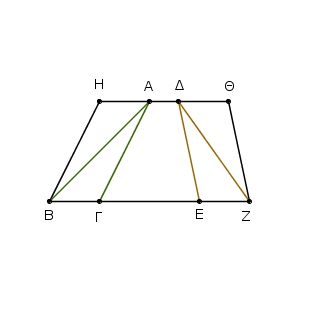
᾿Εκβεβλήσθω γὰρ ἡ ΑΔ ἐφ᾿ ἑκάτερα τὰ μέρη ἐπὶ τὰ Η, Θ, καὶ διὰ μὲν τοῦ Β τῇ ΓΑ παράλληλος ἤχθω ἡ ΒΗ, δὶα δὲ τοῦ Ζ τῇ ΔΕ παράλληλος ἤχθω ἡ ΖΘ.
παραλληλόγραμμον ἄρα ἐστὶν ἑκάτερον τῶν ΗΒΓΑ, ΔΕΖΘ· καὶ ἴσον τὸ ΗΒΓΑ τῷ ΔΕΖΘ· ἐπί τε γὰρ ἴσων βάσεών εἰσι τῶν ΒΓ, ΕΖ καὶ ἐν ταῖς αὐταῖς παραλλήλοις ταῖς ΒΖ, ΗΘ·
καί ἐστι τοῦ μὲν ΗΒΓΑ παραλληλογράμμου ἥμισυ τὸ ΑΒΓ τρίγωνον. ἡ γὰρ ΑΒ διάμετρος αὐτὸ δίχα τέμνει· τοῦ δὲ ΔΕΖΘ παραλληλογράμμου ἥμισυ τὸ ΖΕΔ τρίγωνον· ἡ γὰρ ΔΖ διάμετρος αὐτὸ δίχα τέμνει [τὰ δὲ τῶν ἴσων ἡμίση ἴσα ἀλλήλοις ἐστίν]. ἴσον ἄρα ἐστὶ τὸ ΑΒΓ τρίγωνον τῷ ΔΕΖ τριγώνῳ.
Τὰ ἄρα τρίγωνα τὰ ἐπὶ ἴσων βάσεων ὄντα καὶ ἐν ταῖς αὐταῖς παραλλήλοις ἴσα ἀλλήλοις ἐστίν· ὅπερ ἔδει δεῖξαι.
Τὰ ἴσα τρίγωνα τὰ ἐπὶ τῆς αὐτῆς βάσεως ὄντα καὶ ἐπὶ τὰ αὐτὰ μέρη καὶ ἐν ταῖς αὐταῖς παραλλήλοις ἐστίν.
῎Εστω ἴσα τρίγωνα τὰ ΑΒΓ, ΔΒΓ ἐπὶ τῆς αὐτῆς βάσεως ὄντα καὶ ἐπὶ τὰ αὐτὰ μέρη τῆς ΒΓ· λέγω, ὅτι καὶ ἐν ταῖς αὐταῖς παραλλήλοις ἐστίν.
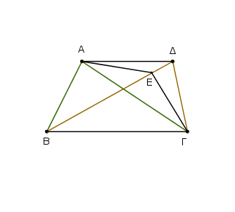
᾿Επεζεύχθω γὰρ ἡ ΑΔ· λέγω, ὅτι παράλληλός ἐστιν ἡ ΑΔ τῇ ΒΓ.
Εἰ γὰρ μή, ἤχθω διὰ τοῦ Α σημείου τῇ ΒΓ εὐθείᾳ παράλληλος ἡ ΑΕ, καὶ ἐπεζεύχθω ἡ ΕΓ. ἴσον ἄρα ἐστὶ τὸ ΑΒΓ τρίγωνον τῷ ΕΒΓ τριγώνῳ· ἐπί τε γὰρ τῆς αὐτῆς βάσεώς ἐστιν αὐτῷ τῆς ΒΓ καὶ ἐν ταῖς αὐταῖς παραλλήλοις. ἀλλὰ τὸ ΑΒΓ τῷ ΔΒΓ ἐστιν ἴσον· καὶ τὸ ΔΒΓ ἄρα τῷ ΕΒΓ ἴσον ἐστὶ τὸ μεῖζον τῷ ἐλάσσονι· ὅπερ ἐστὶν ἀδύνατον· οὐκ ἄρα παράλληλός ἐστιν ἡ ΑΕ τῇ ΒΓ. ὁμοίως δὴ δείξομεν, ὅτι οὐδ᾿ ἄλλη τις πλὴν τῆς ΑΔ· ἡ ΑΔ ἄρα τῇ ΒΓ ἐστι παράλληλος.
Τὰ ἄρα ἴσα τρίγωνα τὰ ἐπὶ τῆς αὐτῆς βάσεως ὄντα καὶ ἐπὶ τὰ αὐτὰ μέρη καὶ ἐν ταῖς αὐταῖς παραλλήλοις ἐστίν· ὅπερ ἔδει δεῖξαι.
Τὰ ἴσα τρίγωνα τὰ ἐπὶ ἴσων βάσεων ὄντα καὶ ἐπὶ τὰ αὐτὰ μέρη καὶ ἐν ταῖς αὐταῖς παραλλήλοις ἐστίν.
῎Εστω ἴσα τρίγωνα τὰ ΑΒΓ, ΓΔΕ ἐπὶ ἴσων βάσεων τῶν ΒΓ, ΓΕ καὶ ἐπὶ τὰ αὐτὰ μέρη. λέγω, ὅτι καὶ ἐν ταῖς αὐταῖς παραλλήλοις ἐστίν.
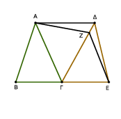
᾿Επεζεύχθω γὰρ ἡ ΑΔ· λέγω, ὅτι παράλληλός ἐστιν ἡ ΑΔ τῇ ΒΕ.
Εἰ γὰρ μή, ἤχθω διὰ τοῦ Α τῇ ΒΕ παράλληλος ἡ ΑΖ, καὶ ἐπεζεύχθω ἡ ΖΕ. ἴσον ἄρα ἐστὶ τὸ ΑΒΓ τρίγωνον τῷ ΖΓΕ τριγώνῳ· ἐπί τε γὰρ ἴσων βάσεών εἰσι τῶν ΒΓ, ΓΕ καὶ ἐν ταῖς αὐταῖς παραλλήλοις ταῖς ΒΕ, ΑΖ.
ἀλλὰ τὸ ΑΒΓ τρίγωνον ἴσον ἐστὶ τῷ ΔΓΕ [τρίγωνῳ]· καὶ τὸ ΔΓΕ ἄρα [τρίγωνον] ἴσον ἐστὶ τῷ ΖΓΕ τριγώνῳ τὸ μεῖζον τῷ ἐλάσσονι· ὅπερ ἐστὶν ἀδύνατον· οὐκ ἄρα παράλληλος ἡ ΑΖ τῇ ΒΕ.
ὁμοίως δὴ δείξομεν, ὅτι οὐδ᾿ ἄλλη τις πλὴν τῆς ΑΔ· ἡ ΑΔ ἄρα τῇ ΒΕ ἐστι παράλληλος.
Τὰ ἄρα ἴσα τρίγωνα τὰ ἐπὶ ἴσων βάσεων ὄντα καὶ ἐπὶ τὰ αὐτὰ μέρη καὶ ἐν ταῖς αὐταῖς παραλλήλοις ἐστίν· ὅπερ ἔδει δεῖξαι.
᾿Εὰν παραλληλόγραμμον τριγώνῳ βάσιν τε ἔχῃ τὴν αὐτὴν καὶ ἐν ταῖς αὐταῖς παραλλήλοις ᾖ, διπλάσιόν ἐστί τὸ παραλληλόγραμμον τοῦ τριγώνου.
Παραλληλόγραμμον γὰρ τὸ ΑΒΓΔ τριγώνῳ τῷ ΕΒΓ βάσιν τε ἐχέτω τὴν αὐτὴν τὴν ΒΓ καὶ ἐν ταῖς αὐταῖς παραλλήλοις ἔστω ταῖς ΒΓ, ΑΕ· λέγω, ὅτι διπλάσιόν ἐστι τὸ ΑΒΓΔ παραλληλόγραμμον τοῦ ΒΕΓ τριγώνου.
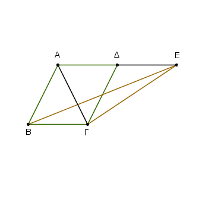
᾿Επεζεύχθω γὰρ ἡ ΑΓ. ἴσον δή ἐστι τὸ ΑΒΓ τρίγωνον τῷ ΕΒΓ τριγώνῳ· ἐπί τε γὰρ τῆς αὐτῆς βάσεώς ἐστιν αὐτῷ τῆς ΒΓ καὶ ἐν ταῖς αὐταῖς παραλλήλοις ταῖς ΒΓ, ΑΕ.
ἀλλὰ τὸ ΑΒΓΔ παραλληλόγραμμον διπλάσιόν ἐστι τοῦ ΑΒΓ τριγώνου· ἡ γὰρ ΑΓ διάμετρος αὐτὸ δίχα τέμνει· ὥστε τὸ ΑΒΓΔ παραλληλόγραμμον καὶ τοῦ ΕΒΓ τριγώνου ἐστὶ διπλάσιον.
᾿Εὰν ἄρα παραλληλόγραμμον τριγώνῳ βάσιν τε ἔχῃ τὴν αὐτὴν καὶ ἐν ταῖς αὐταῖς παραλλήλοις ᾖ, διπλάσιόν ἐστί τὸ παραλληλόγραμμον τοῦ τριγώνου· ὅπερ ἔδει δεῖξαι.
Τῷ δοθέντι τριγώνῳ ἴσον παραλληλόγραμμον συστήσασθαι ἐν τῇ δοθείσῃ γωνίᾳ εὐθυγράμμῳ.
῎Εστω τὸ μὲν δοθὲν τρίγωνον τὸ ΑΒΓ, ἡ δὲ δοθεῖσα γωνία εὐθύγραμμος ἡ Δ· δεῖ δὴ τῷ ΑΒΓ τριγώνῳ ἴσον παραλληλόγραμμον συστήσασθαι ἐν τῇ Δ γωνίᾳ εὐθυγράμμῳ.
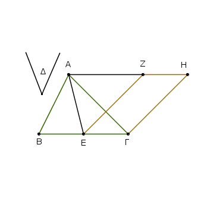
Τετμήσθω ἡ ΒΓ δίχα κατὰ τὸ Ε, καὶ ἐπεζεύχθω ἡ ΑΕ, καὶ συνεστάτω πρὸς τῇ ΕΓ εὐθείᾳ καὶ τῷ πρὸς αὐτῇ σημείῳ τῷ Ε τῇ Δ γωνίᾳ ἴση ἡ ὑπὸ ΓΕΖ, καὶ διὰ μὲν τοῦ Α τῇ ΕΓ παράλληλος ἤχθω ἡ ΑΗ, διὰ δὲ τοῦ Γ τῇ ΕΖ παράλληλος ἤχθω ἡ ΓΗ· παραλληλόγραμμον ἄρα ἐστὶ τὸ ΖΕΓΗ.
καὶ ἐπεὶ ἴση ἐστὶν ἡ ΒΕ τῇ ΕΓ, ἴσον ἐστὶ καὶ τὸ ΑΒΕ τρίγωνον τῷ ΑΕΓ τριγώνῳ· ἐπί τε γὰρ ἴσων βάσεών εἰσι τῶν ΒΕ, ΕΓ καὶ ἐν ταῖς αὐταῖς παραλλήλοις ταῖς ΒΓ, ΑΗ· διπλάσιον ἄρα ἐστὶ τὸ ΑΒΓ τρίγωνον τοῦ ΑΕΓ τριγώνου.
ἔστι δὲ καὶ τὸ ΖΕΓΗ παραλληλόγραμμον διπλάσιον τοῦ ΑΕΓ τριγώνου· βάσιν τε γὰρ αὐτῷ τὴν αὐτὴν ἔχει καὶ ἐν ταῖς αὐταῖς ἐστιν αὐτῷ παραλλήλοις· ἴσον ἄρα ἐστὶ τὸ ΖΕΓΗ παραλληλόγραμμον τῷ ΑΒΓ τριγώνῳ. καὶ ἔχει τὴν ὑπὸ ΓΕΖ γωνίαν ἴσην τῇ δοθείσῃ τῇ Δ.
Τῷ ἄρα δοθέντι τριγώνῳ τῷ ΑΒΓ ἴσον παραλληλόγραμμον συνέσταται τὸ ΖΕΓΗ ἐν γωνίᾳ τῇ ὑπὸ ΓΕΖ, ἥτις ἐστὶν ἴση τῇ Δ· ὅπερ ἔδει ποιῆσαι.
Παντὸς παραλληλογράμμου τῶν περὶ τὴν διάμετρον παραλληλογράμμων τὰ παραπληρώματα ἴσα ἀλλήλοις ἐστίν.
῎Εστω παραλληλόγραμμον τὸ ΑΒΓΔ, διάμετρος δὲ αὐτοῦ ἡ ΑΓ, περὶ δὲ τὴν ΑΓ παραλληλόγραμμα μὲν ἔστω τὰ ΕΘ, ΖΗ, τὰ δὲ λεγόμενα παραπληρώματα τὰ ΒΚ, ΚΔ· λέγω, ὅτι ἴσον ἐστὶ τὸ ΒΚ παραπλήρωμα τῷ ΚΔ παραπληρώματι.
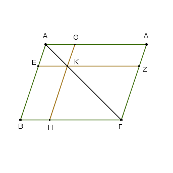
᾿Επεὶ γὰρ παραλληλόγραμμόν ἐστι τὸ ΑΒΓΔ, διάμετρος δὲ αὐτοῦ ἡ ΑΓ, ἴσον ἐστὶ τὸ ΑΒΓ τρίγωνον τῷ ΑΓΔ τριγώνῳ.
πάλιν, ἐπεὶ παραλληλόγραμμόν ἐστι τὸ ΕΘ, διάμετρος δὲ αὐτοῦ ἐστιν ἡ ΑΚ, ἴσον ἐστὶ τὸ ΑΕΚ τρίγωνον τῷ ΑΘΚ τριγώνῳ. διὰ τὰ αὐτὰ δὴ καὶ τὸ ΚΖΓ τρίγωνον τῷ ΚΗΓ ἐστιν ἴσον.
ἐπεὶ οὖν τὸ μὲν ΑΕΚ τρίγωνον τῷ ΑΘΚ τριγώνῳ ἐστὶν ἴσον, τὸ δὲ ΚΖΓ τῷ ΚΗΓ, τὸ ΑΕΚ τρίγωνον μετὰ τοῦ ΚΗΓ ἴσον ἐστὶ τῷ ΑΘΚ τριγώνῳ μετὰ τοῦ ΚΖΓ· ἔστι δὲ καὶ ὅλον τὸ ΑΒΓ τρίγωνον ὅλῳ τῷ ΑΔΓ ἴσον· λοιπὸν ἄρα τὸ ΒΚ παραπλήρωμα λοιπῷ τῷ ΚΔ παραπληρώματί ἐστιν ἴσον.
Παντὸς ἄρα παραλληλογράμμου χωρίου τῶν περὶ τὴν διάμετρον παραλληλογράμμων τὰ παραπληρώματα ἴσα ἀλλήλοις ἐστίν· ὅπερ ἔδει δεῖξαι.
Παρὰ τὴν δοθεῖσαν εὐθεῖαν τῷ δοθέντι τριγώνῳ ἴσον παραλληλόγραμμον παραβαλεῖν ἐν τῇ δοθείσῃ γωνίᾳ εὐθυγράμμῳ.
῎Εστω ἡ μὲν δοθεῖσα εὐθεῖα ἡ ΑΒ, τὸ δὲ δοθὲν τρίγωνον τὸ Γ, ἡ δὲ δοθεῖσα γωνία εὐθύγραμμος ἡ Δ· δεῖ δὴ παρὰ τὴν δοθεῖσαν εὐθεῖαν τὴν ΑΒ τῷ δοθέντι τριγώνῳ τῷ Γ ἴσον παραλληλόγραμμον παραβαλεῖν ἐν ἴσῃ τῇ Δ γωνίᾳ.
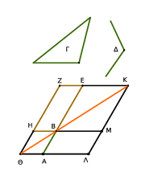
Συνεστάτω τῷ Γ τριγώνῳ ἴσον παραλληλόγραμμον τὸ ΒΕΖΗ ἐν γωνίᾳ τῇ ὑπὸ ΕΒΗ, ἥ ἐστιν ἴση τῇ Δ· καὶ κείσθω ὥστε ἐπ᾿ εὐθείας εἶναι τὴν ΒΕ τῇ ΑΒ, καὶ διήχθω ἡ ΖΗ ἐπὶ τὸ Θ, καὶ διὰ τοῦ Α ὁποτέρᾳ τῶν ΒΗ, ΕΖ παράλληλος ἤχθω ἡ ΑΘ, καὶ ἐπεζεύχθω ἡ ΘΒ.
καὶ ἐπεὶ εἰς παραλλήλους τὰς ΑΘ, ΕΖ εὐθεῖα ἐνέπεσεν ἡ ΘΖ, αἱ ἄρα ὑπὸ ΑΘΖ, ΘΖΕ γωνίαι δυσὶν ὀρθαῖς εἰσιν ἴσαι.
αἱ ἄρα ὑπὸ ΒΘΗ, ΗΖΕ δύο ὀρθῶν ἐλάσσονές εἰσιν· αἱ δὲ ἀπὸ ἐλασσόνων ἢ δύο ὀρθῶν εἰς ἄπειρον ἐκβαλλόμεναι συμπίπτουσιν· αἱ ΘΒ, ΖΕ ἄρα ἐκβαλλόμεναι συμπεσοῦνται.
ἐκβεβλήσθωσαν καὶ συμπιπτέτωσαν κατὰ τὸ Κ, καὶ διὰ τοῦ Κ σημείου ὁποτέρᾳ τῶν ΕΑ, ΖΘ παράλληλος ἤχθω ἡ ΚΛ, καὶ ἐκβεβλήσθωσαν αἱ ΘΑ, ΗΒ ἐπὶ τὰ Λ, Μ σημεῖα.
παραλληλόγραμμον ἄρα ἐστὶ τὸ ΘΛΚΖ, διάμετρος δὲ αὐτοῦ ἡ ΘΚ, περὶ δὲ τὴν ΘΚ παραλληλόγραμμα μὲν τὰ ΑΗ, ΜΕ, τὰ δὲ λεγόμενα παραπληρώματα τὰ ΛΒ, ΒΖ· ἴσον ἄρα ἐστὶ τὸ ΛΒ τῷ ΒΖ.
ἀλλὰ τὸ ΒΖ τῷ Γ τριγώνῳ ἐστὶν ἴσον· καὶ τὸ ΛΒ ἄρα τῷ Γ ἐστιν ἴσον. καὶ ἐπεὶ ἴση ἐστὶν ἡ ὑπὸ ΗΒΕ γωνία τῇ ὑπὸ ΑΒΜ, ἀλλὰ ἡ ὑπὸ ΗΒΕ τῇ Δ ἐστιν ἴση, καὶ ἡ ὑπὸ ΑΒΜ ἄρα τῇ Δ γωνίᾳ ἐστὶν ἴση.
Παρὰ τὴν δοθεῖσαν ἄρα εὐθεῖαν τὴν ΑΒ τῷ δοθέντι τριγώνῳ τῷ Γ ἴσον παραλληλόγραμμον παραβέβληται τὸ ΛΒ ἐν γωνίᾳ τῇ ὑπὸ ΑΒΜ, ἥ ἐστιν ἴση τῇ Δ· ὅπερ ἔδει ποιῆσαι.
Τῷ δοθέντι εὐθυγράμμῳ ἴσον παραλληλόγραμμον συστήσασθαι ἐν τῇ δοθείσῃ γωνίᾳ εὐθυγράμμῳ.
῎Εστω τὸ μὲν δοθὲν εὐθύγραμμον τὸ ΑΒΓΔ, ἡ δὲ δοθεῖσα γωνία εὐθύγραμμος ἡ Ε· δεῖ δὴ τῷ ΑΒΓΔ εὐθυγράμμῳ ἴσον παραλληλόγραμμον συστήσασθαι ἐν τῇ δοθείσῃ γωνίᾳ τῇ Ε.
᾿Επεζεύχθω ἡ ΔΒ, καὶ συνεστάτω τῷ ΑΒΔ τριγώνῳ ἴσον παραλληλόγραμ-μον τὸ ΖΘ ἐν τῇ ὑπὸ ΘΚΖ γωνίᾳ, ἥ ἐστιν ἴση τῇ Ε· καὶ παραβεβλήσθω παρὰ τὴν ΗΘ εὐθεῖαν τῷ ΔΒΓ τριγώνῳ ἴσον παραλληλόγραμμον τὸ ΗΜ ἐν τῇ ὑπὸ ΗΘΜ γωνίᾳ, ἥ ἐστιν ἴση τῇ Ε.
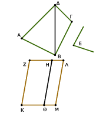
καὶ ἐπεὶ ἡ Ε γωνία ἑκατέρᾳ τῶν ὑπὸ ΘΚΖ, ΗΘΜ ἐστιν ἴση, καὶ ἡ ὑπὸ ΘΚΖ ἄρα τῇ ὑπὸ ΗΘΜ ἐστιν ἴση. κοινὴ προσκείσθω ἡ ὑπὸ ΚΘΗ·
αἱ ἄρα ὑπὸ ΖΚΘ, ΚΘΗ ταῖς ὑπὸ ΚΘΗ, ΗΘΜ ἴσαι εἰσίν. ἀλλ᾿ αἱ ὑπὸ ΖΚΘ, ΚΘΗ δυσὶν ὀρθαῖς ἴσαι εἰσίν· καὶ αἱ ὑπὸ ΚΘΗ, ΗΘΜ ἄρα δύο ὀρθαῖς ἴσαι εἰσίν.
πρὸς δή τινι εὐθεῖᾳ τῇ ΗΘ καὶ τῷ πρὸς αὐτῇ σημείῳ τῷ Θ δύο εὐθεῖαι αἱ ΚΘ, ΘΜ μὴ ἐπὶ τὰ αὐτὰ μέρη κείμεναι τὰς ἐφεξῆς γωνίας δύο ὀρθαῖς ἴσας ποιοῦσιν· ἐπ᾿ εὐθείας ἄρα ἐστὶν ἡ ΚΘ τῇ ΘΜ·
καὶ ἐπεὶ εἰς παραλλήλους τὰς ΚΜ, ΖΗ εὐθεῖα ἐνέπεσεν ἡ ΘΗ, αἱ ἐναλλὰξ γωνίαι αἱ ὑπὸ ΜΘΗ, ΘΗΖ ἴσαι ἀλλήλαις εἰσίν. κοινὴ προσκείσθω ἡ ὑπὸ ΘΗΛ· αἱ ἄρα ὑπὸ ΜΘΗ, ΘΗΛ ταῖς ὑπὸ ΘΗΖ, ΘΗΛ ἴσαι εἰσιν. ἀλλ᾿ αἱ ὑπὸ ΜΘΗ, ΘΗΛ δύο ὀρθαῖς ἴσαι εἰσίν· καὶ αἱ ὑπὸ ΘΗΖ, ΘΗΛ ἄρα δύο ὀρθαῖς ἴσαι εἰσίν· ἐπ᾿ εὐθείας ἄρα ἐστὶν ἡ ΖΗ τῇ ΗΛ. καὶ ἐπεὶ ἡ ΖΚ τῇ ΘΗ ἴση τε καὶ παράλληλός ἐστιν, ἀλλὰ καὶ ἡ ΘΗ τῇ ΜΛ, καὶ ἡ ΚΖ ἄρα τῇ ΜΛ ἴση τε καὶ παράλληλός ἐστιν· καὶ ἐπιζευγνύουσιν αὐτὰς εὐθεῖαι αἱ ΚΜ, ΖΛ· καὶ αἱ ΚΜ, ΖΛ ἄρα ἴσαι τε καὶ παράλληλοί εἰσιν· παραλληλόγραμμον ἄρα ἐστὶ τὸ ΚΖΛΜ.
καὶ ἐπεὶ ἴσον ἐστὶ τὸ μὲν ΑΒΔ τρίγωνον τῷ ΖΘ παραλληλογράμμῳ, τὸ δὲ ΔΒΓ τῷ ΗΜ, ὅλον ἄρα τὸ ΑΒΓΔ εὐθύγραμμον ὅλῳ τῷ ΚΖΛΜ παραλληλογράμμῳ ἐστὶν ἴσον.
Τῷ ἄρα δοθέντι εὐθυγράμμῳ τῷ ΑΒΓΔ ἴσον παραλληλόγραμμον συνέσταται τὸ ΚΖΛΜ ἐν γωνίᾳ τῇ ὑπὸ ΖΚΜ, ἥ ἐστιν ἴση τῇ δοθείσῃ τῇ Ε· ὅπερ ἔδει ποιῆσαι.
᾿Απὸ τῆς δοθείσης εὐθείας τετράγωνον ἀναγράψαι.
῎Εστω ἡ δοθεῖσα εὐθεῖα ἡ ΑΒ· δεῖ δὴ ἀπὸ τῆς ΑΒ εὐθείας τετράγωνον ἀναγράψαι.
῎Ηχθω τῇ ΑΒ εὐθείᾳ ἀπὸ τοῦ πρὸς αὐτῇ σημείου τοῦ Α πρὸς ὀρθὰς ἡ ΑΓ, καὶ κείσθω τῇ ΑΒ ἴση ἡ ΑΔ· καὶ διὰ μὲν τοῦ Δ σημείου τῇ ΑΒ παράλληλος ἤχθω ἡ ΔΕ, διὰ δὲ τοῦ Β σημείου τῇ ΑΔ παράλληλος ἤχθω ἡ ΒΕ. παραλληλόγραμμον ἄρα ἐστὶ τὸ ΑΔΕΒ·
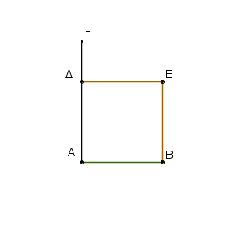
ἴση ἄρα ἐστὶν ἡ μὲν ΑΒ τῇ ΔΕ, ἡ δὲ ΑΔ τῇ ΒΕ. ἀλλὰ ἡ ΑΒ τῇ ΑΔ ἐστιν ἴση· αἱ τέσσαρες ἄρα αἱ ΒΑ, ΑΔ, ΔΕ, ΕΒ ἴσαι ἀλλήλαις εἰσίν· ἰσόπλευρον ἄρα ἐστὶ τὸ ΑΔΕΒ παραλληλόγραμμον.
λέγω δή, ὅτι καὶ ὀρθογώνιον. ἐπεὶ γὰρ εἰς παραλλήλους τὰς ΑΒ, ΔΕ εὐθεῖα ἐνέπεσεν ἡ ΑΔ, αἱ ἄρα ὑπὸ ΒΑΔ, ΑΔΕ γωνίαι δύο ὀρθαῖς ἴσαι εἰσίν. ὀρθὴ δὲ ἡ ὑπὸ ΒΑΔ· ὀρθὴ ἄρα καὶ ἡ ὑπὸ ΑΔΕ. τῶν δὲ παραλληλογράμμων χωρίων αἱ ἀπεναντίον πλευραί τε καὶ γωνίαι ἴσαι ἀλλήλαις εἰσίν· ὀρθὴ ἄρα καὶ ἑκατέρα τῶν ἀπεναντίον τῶν ὑπὸ ΑΒΕ, ΒΕΔ γωνιῶν· ὀρθογώνιον ἄρα ἐστὶ τὸ ΑΔΕΒ. ἐδείχθη δὲ καὶ ἰσόπλευρον.
Τετράγωνον ἄρα ἐστίν· καί ἐστιν ἀπὸ τῆς ΑΒ εὐθείας ἀναγεγραμμένον· ὅπερ ἔδει ποιῆσαι.
᾿Εν τοῖς ὀρθογωνίοις τριγώνοις τὸ ἀπὸ τῆς τὴν ὀρθὴν γωνίαν ὑποτεινούσης πλευρᾶς τετράγωνον ἴσον ἐστὶ τοῖς ἀπὸ τῶν τὴν ὀρθὴν γωνίαν περιεχουσῶν πλευρῶν τετραγώνοις.
῎Εστω τρίγωνον ὀρθογώνιον τὸ ΑΒΓ ὀρθὴν ἔχον τὴν ὑπὸ ΒΑΓ γωνίαν· λέγω, ὅτι τὸ ἀπὸ τῆς ΒΓ τετράγωνον ἴσον ἐστὶ τοῖς ἀπὸ τῶν ΒΑ, ΑΓ τετραγώνοις.
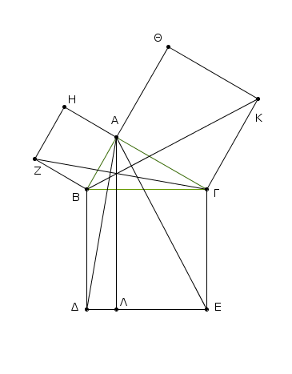
᾿Αναγεγράφθω γὰρ ἀπὸ μὲν τῆς ΒΓ τετράγωνον τὸ ΒΔΕΓ, ἀπὸ δὲ τῶν ΒΑ, ΑΓ τὰ ΗΒ, ΘΓ, καὶ διὰ τοῦ Α ὁποτέρᾳ τῶν ΒΔ, ΓΕ παράλληλος ἤχθω ἡ ΑΛ· καὶ ἐπεζεύχθωσαν αἱ ΑΔ, ΖΓ.
καὶ ἐπεὶ ὀρθή ἐστιν ἑκατέρα τῶν ὑπὸ ΒΑΓ, ΒΑΗ γωνιῶν, πρὸς δή τινι εὐθείᾳ τῇ ΒΑ καὶ τῷ πρὸς αὐτῇ σημείῳ τῷ Α δύο εὐθεῖαι αἱ ΑΓ, ΑΗ μὴ ἐπὶ τὰ αὐτὰ μέρη κείμεναι τὰς ἐφεξῆς γωνίας δυσὶν ὀρθαῖς ἴσας ποιοῦσιν· ἐπ᾿ εὐθείας ἄρα ἐστὶν ἡ ΓΑ τῇ ΑΗ.
διὰ τὰ αὐτὰ δὴ καὶ ἡ ΒΑ τῇ ΑΘ ἐστιν ἐπ᾿ εὐθείας. καὶ ἐπεὶ ἴση ἐστὶν ἡ ὑπὸ ΔΒΓ γωνία τῇ ὑπὸ ΖΒΑ· ὀρθὴ γὰρ ἑκατέρα· κοινὴ προσκείσθω ἡ ὑπὸ ΑΒΓ· ὅλη ἄρα ἡ ὑπὸ ΔΒΑ ὅλῃ τῇ ὑπὸ ΖΒΓ ἐστιν ἴση.
καὶ ἐπεὶ ἴση ἐστὶν ἡ μὲν ΔΒ τῇ ΒΓ, ἡ δὲ ΖΒ τῇ ΒΑ, δύο δὴ αἱ ΔΒ, ΒΑ δύο ταῖς ΖΒ, ΒΓ ἴσαι εἰσὶν ἑκατέρα ἑκατέρᾳ· καὶ γωνία ἡ ὑπὸ ΔΒΑ γωνίᾳ τῇ ὑπὸ ΖΒΓ ἴση· βάσις ἄρα ἡ ΑΔ βάσει τῇ ΖΓ [ἐστιν] ἴση, καὶ τὸ ΑΒΔ τρίγωνον τῷ ΖΒΓ τριγώνῳ ἐστὶν ἴσον·
καί [ἐστι] τοῦ μὲν ΑΒΔ τριγώνου διπλάσιον τὸ ΒΛ παραλληλόγραμμον· βάσιν τε γὰρ τὴν αὐτὴν ἔχουσι τὴν ΒΔ καὶ ἐν ταῖς αὐταῖς εἰσι παραλλήλοις ταῖς ΒΔ, ΑΛ· τοῦ δὲ ΖΒΓ τριγώνου διπλάσιον τὸ ΗΒ τετράγωνον· βάσιν τε γὰρ πάλιν τὴν αὐτὴν ἔχουσι τὴν ΖΒ καὶ ἐν ταῖς αὐταῖς εἰσι παραλλήλοις ταῖς ΖΒ, ΗΓ. [τὰ δὲ τῶν ἴσων διπλάσια ἴσα ἀλλήλοις ἐστίν·] ἴσον ἄρα ἐστὶ καὶ τὸ ΒΛ παραλληλόγραμμον τῷ ΗΒ τετραγώνῳ.
ὁμοίως δὴ ἐπιζευγνυμένων τῶν ΑΕ, ΒΚ δειχθήσεται καὶ τὸ ΓΛ παραλληλόγραμμον ἴσον τῷ ΘΓ τετραγώνῳ· ὅλον ἄρα τὸ ΒΔΕΓ τετράγωνον δυσὶ τοῖς ΗΒ, ΘΓ τετραγώνοις ἴσον ἐστίν.
καί ἐστι τὸ μὲν ΒΔΕΓ τετράγωνον ἀπὸ τῆς ΒΓ ἀναγραφέν, τὰ δὲ ΗΒ, ΘΓ ἀπὸ τῶν ΒΑ, ΑΓ. τὸ ἄρα ἀπὸ τῆς ΒΓ πλευρᾶς τετράγωνον ἴσον ἐστὶ τοῖς ἀπὸ τῶν ΒΑ, ΑΓ πλευρῶν τετραγώνοις.
᾿Εν ἄρα τοῖς ὀρθογωνίοις τριγώνοις τὸ ἀπὸ τῆς τὴν ὀρθὴν γωνίαν ὑποτεινούσης πλευρᾶς τετράγωνον ἴσον ἐστὶ τοῖς ἀπὸ τῶν τὴν ὀρθὴν [γωνίαν] περιεχουσῶν πλευρῶν τετραγώνοις· ὅπερ ἔδει δεῖξαι.
᾿Εὰν τριγώνου τὸ ἀπὸ μιᾶς τῶν πλευρῶν τετράγωνον ἴσον ᾖ τοῖς ἀπὸ τῶν λοιπῶν τοῦ τριγώνου δύο πλευρῶν τετραγώνοις, ἡ περιεχομένη γωνία ὑπὸ τῶν λοιπῶν τοῦ τριγώνου δύο πλευρῶν ὀρθή ἐστιν.
Τριγώνου γὰρ τοῦ ΑΒΓ τὸ ἀπὸ μιᾶς τῆς ΒΓ πλευρᾶς τετράγωνον ἴσον ἔστω τοῖς ἀπὸ τῶν ΒΑ, ΑΓ πλευρῶν τετραγώνοις· λέγω, ὅτι ὀρθή ἐστιν ἡ ὑπὸ ΒΑΓ γωνία.
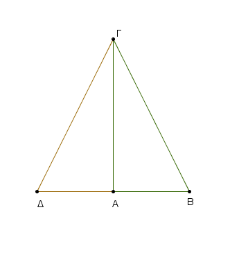
῎Ηχθω γὰρ ἀπὸ τοῦ Α σημείου τῇ ΑΓ εὐθείᾳ πρὸς ὀρθὰς ἡ ΑΔ καὶ κείσθω τῇ ΒΑ ἴση ἡ ΑΔ, καὶ ἐπεζεύχθω ἡ ΔΓ. ἐπεὶ ἴση ἐστὶν ἡ ΔΑ τῇ ΑΒ, ἴσον ἐστὶ καὶ τὸ ἀπὸ τῆς ΔΑ τετράγωνον τῷ ἀπὸ τῆς ΑΒ τετραγώνῳ. κοινὸν προσκείσθω τὸ ἀπὸ τῆς ΑΓ τετράγωνον· τὰ ἄρα ἀπὸ τῶν ΔΑ, ΑΓ τετράγωνα ἴσα ἐστὶ τοῖς ἀπὸ τῶν ΒΑ, ΑΓ τετραγώνοις.
ἀλλὰ τοῖς μὲν ἀπὸ τῶν ΔΑ, ΑΓ ἴσον ἐστὶ τὸ ἀπὸ τῆς ΔΓ· ὀρθὴ γάρ ἐστιν ἡ ὑπὸ ΔΑΓ γωνία· τοῖς δὲ ἀπὸ τῶν ΒΑ, ΑΓ ἴσον ἐστὶ τὸ ἀπὸ τῆς ΒΓ· ὑπόκειται γάρ· τὸ ἄρα ἀπὸ τῆς ΔΓ τετράγωνον ἴσον ἐστὶ τῷ ἀπὸ τῆς ΒΓ τετραγώνῳ· ὥστε καὶ πλευρὰ ἡ ΔΓ τῇ ΒΓ ἐστιν ἴση·
καὶ ἐπεὶ ἴση ἐστὶν ἡ ΔΑ τῇ ΑΒ, κοινὴ δὲ ἡ ΑΓ, δύο δὴ αἱ ΔΑ, ΑΓ δύο ταῖς ΒΑ, ΑΓ ἴσαι εἰσίν· καὶ βάσις ἡ ΔΓ βάσει τῇ ΒΓ ἴση· γωνία ἄρα ἡ ὑπὸ ΔΑΓ γωνίᾳ τῇ ὑπὸ ΒΑΓ [ἐστιν] ἴση. ὀρθὴ δὲ ἡ ὑπὸ ΔΑΓ· ὀρθὴ ἄρα καὶ ἡ ὑπὸ ΒΑΓ.
᾿Εὰν ἀρὰ τριγώνου τὸ ἀπὸ μιᾶς τῶν πλευρῶν τετράγωνον ἴσον ᾖ τοῖς ἀπὸ τῶν λοιπῶν τοῦ τριγώνου δύο πλευρῶν τετραγώνοις, ἡ περιεχομένη γωνία ὑπὸ τῶν λοιπῶν τοῦ τριγώνου δύο πλευρῶν ὀρθή ἐστιν· ὅπερ ἔδει δεῖξαι.